← 回股市觀察
逐檔技術線型分析
2026/10/06 · 成交金額上市前 50 名 ＋ 上櫃前 20 名（共 70 檔）· 公開資料整理
49822.55
加權指數 +110.51 點（+0.22%）
462 / 519
上市個股上漲／下跌家數
上漲 42.7% · 下跌 48.0% · 持平 9.3%（共 1081 檔）
300 / 475
上櫃個股上漲／下跌家數
上漲 34.7% · 下跌 54.9% · 持平 10.4%（共 865 檔）
統計範圍：當日成交金額上市前 50 名 ＋ 上櫃前 20 名（共 70 檔，皆為 4 位數代號的個股，不含 ETF／權證）。
兩個市場各自取前 N 名後合併呈現，卡片上標示市場別（上市／上櫃），清單也附市場分布。
條件統計：上市 上升趨勢：底底高 ＋ 頭頭高 12 檔、突破頸線 22 檔、底底高 12 檔、頭頭高 47 檔、站上月線 48 檔、月線向上 38 檔、外資買超 27 檔、量價攻擊（收紅＋大量） 21 檔、跌破前低（線型轉弱） 1 檔；上櫃 上升趨勢：底底高 ＋ 頭頭高 7 檔、突破頸線 11 檔、底底高 8 檔、頭頭高 17 檔、站上月線 19 檔、月線向上 18 檔、外資買超 8 檔、量價攻擊（收紅＋大量） 8 檔、跌破前低（線型轉弱） 0 檔。
五項全滿足（底底高＋頭頭高＋站上月線＋月線向上＋5 日線向上）：上市 鴻海、臻鼎-KY、華新科、南電、日月光投控、禾伸堂、鼎元、台表科；上櫃 金居、精材、富喬、昇達科、聯一光、順達。
資料日 2026/10/06。籌碼：上市為證交所三大法人、上櫃為櫃買中心三大法人；上櫃另附融資餘額。
每一檔都附上 K 線圖與線型說明：黃圈是轉折低點、粉圈是轉折高點、藍線是月線。
圖上兩條水平虛線、左側標數值：高點頸線（紅，連到最多「轉折高點」的那條水平線，代表上方壓力帶；收盤站上就算突破）與
低點頸線（綠，連到最多「轉折低點」的那條水平線，代表下方支撐帶；收盤跌破就算跌破）；
兩條線都只看最近 6 個轉折點、容忍同一價位帶 4%，連不到 2 個轉折點就不畫。
卡片的標籤可以點回上方對應清單，清單裡的股名也可以點到該檔。
本頁為公開資料（證交所每日收盤行情與三大法人、櫃買中心每日收盤行情與三大法人、Yahoo 股市日線）的整理與觀察，
不構成投資建議，不報牌、不預測、不下買賣決策。
大盤趨勢快篩（加權指數） 資料日 2026/10/06・來源：證交所公開資料
主狀態：突破頸線且帶量
前一交易日對照（10/05）：突破頸線且帶量（量比 20 1.38） → 今日突破頸線且帶量（量比 20 1.16）
指標、數值、判定（點開看 12 項明細：均線位置／排列、月線方向、頸線、轉折結構、位階、量價…）
加權指數今天漲 110.51 點（+0.22%），收 49,822.55、站上月線 47,453.46；月線還在上彎，已站上高點頸線 47,385.28。
- 均線位置：收盤在 MA5、MA10、MA20、MA60 之上（4 條全部站上）
- 月線方向：月線 MA20 現在 47,453.46，比 5 個交易日前高 632.66 點 → 上彎
- 量能：集中市場成交 10,262.0 億，跟 5 日均量差不多（1.03 倍）、比 20 日均量大不少（1.16 倍）
- 關鍵價位：高點頸線 47,385.28已突破；低點頸線 44,639.15，還在下方 11.61%
- 大小型股：加權 +0.22%、櫃買 -0.37%，方向相反（大型股與小型股不同調）
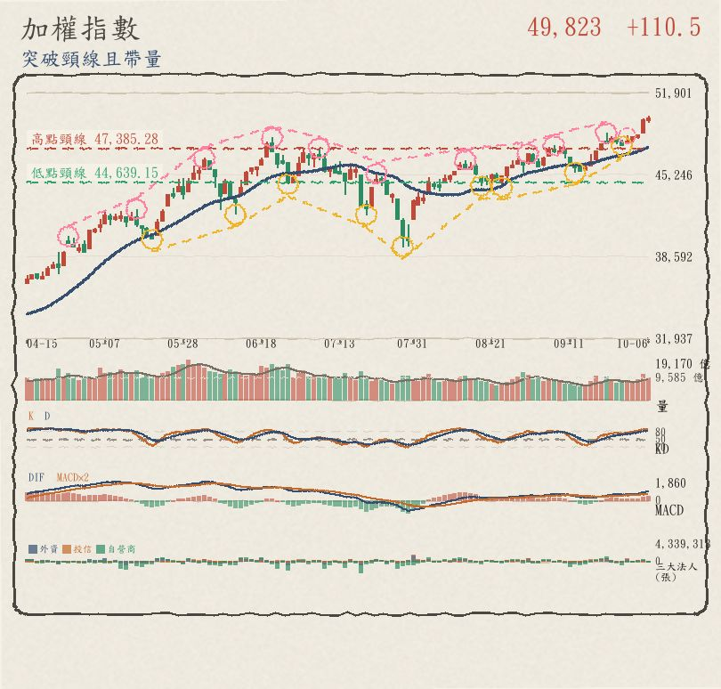
圖說：加權指數日 K（與個股圖相同標記）：黃圈＝轉折低點、粉圈＝轉折高點、虛線小圈＝還沒確認的轉折、藍線＝月線 MA20、水平虛線＝高點／低點頸線。最後一根是資料日當天。
本區塊為公開資料的技術面觀察，不構成投資建議，
不報牌、不預測、不下買賣決策。成交金額為集中市場總成交金額（含 ETF／權證），
與頁首摘要的「上市個股成交金額」口徑不同。標籤是統計，不是評分、也不是推薦。
上市 vs 上櫃（同期快篩）
加權 +0.22% vs 櫃買 -0.37%（方向相反，大小型股背離） → 方向相反（大小型股背離）
（兩個市場分開寫，不合併成一個數字；櫃買為 TPEX 公開資料）
櫃買歷史：TPEX 逐日回補 130 根；來源：櫃買中心 www/zh-tw/indexInfo/sectinx（逐日，官方；OpenAPI tpex_index 只回當月）
（TPEX OpenAPI 只回當月，故逐日回補；歷史不足就不算該條均線並標「資料不足」，不用錯數字）
近 20 個交易日大盤狀態回溯（最新在上）（點開看逐日主狀態／量比／量價象限）
用同一支程式回算最近 20 個交易日（主狀態 S1~S8 與量比 20 皆為當日收盤當時的判定，
不是事後調整）；量比 20 未公布的日子寫「—」。
好條件最多的（前 10）
不好條件最多的（前 10）
好條件（8 項）：站上月線、月線向上、底底高、頭頭高、突破頸線、相對大盤強、外資買超、量價攻擊（收紅＋大量）。
不好條件（8 項）：跌破前低、今日下跌、相對大盤弱、在月線之下、量增下跌（出貨）、外資賣超、月線下彎、收盤跌破前一日低點。
兩邊都是同一組資料（日線結構＋當日收盤量價籌碼）算出來的「符合項目數」，只是方向相反；
條件數不是評分、也不是推薦，不構成投資建議。
上升趨勢：底底高 ＋ 頭頭高（19 上市 12／上櫃 7）
量價攻擊（收紅＋大量）（29 上市 21／上櫃 8）
逐檔分析（70 檔）
剛突破前高 成交金額 536.39 億・全榜第 1 名（上市第 1 名）
好條件 6/8：站上月線、月線向上、頭頭高、突破頸線、相對大盤強、量價攻擊（收紅＋大量）
不好條件 1/8：外資賣超
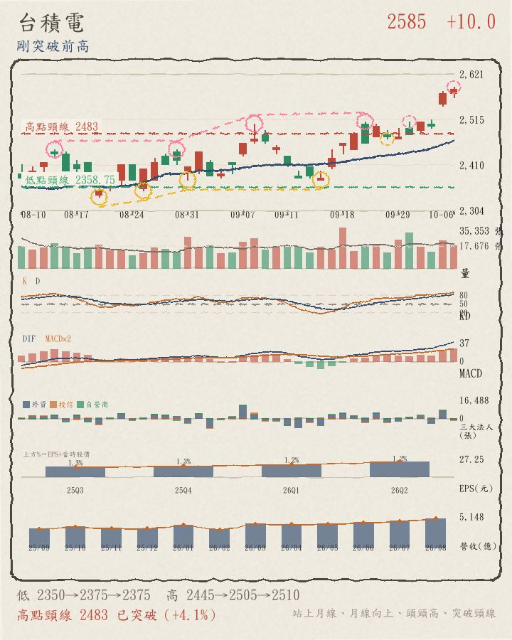
今天收紅、站上月線 2466.25，已站上高點頸線 2483，高點還在墊高（但底部沒同步墊高）。
- 月線位置：收盤 2585 在月線 2466.25 之上；5 日線 2530 也在月線之上（短均在上）；月線向上、5 日線向上
- 量能：成交量是 20 日均量的 1.01 倍，跟 20 日均量差不多
- 關鍵價位：高點頸線 2483 已站上；最近轉折高點 2510（高於 3.0%）；最近轉折低點 2375（高於 8.8%）
- 轉折結構：高點 2445、2505、2510 墊高 3.2%（頭頭高），但低點 2350、2375、2375 沒有同步墊高；還沒確認的轉折低點 09-24 2470；還沒確認的轉折高點 09-30 2510、10-06 2590（圖上虛線小圈）
上升趨勢（底底高＋頭頭高） 成交金額 495.84 億・全榜第 2 名（上市第 2 名）
好條件 4/8：站上月線、月線向上、底底高、頭頭高
不好條件 5/8：今日下跌、相對大盤弱、量增下跌（出貨）、外資賣超、收盤跌破前一日低點
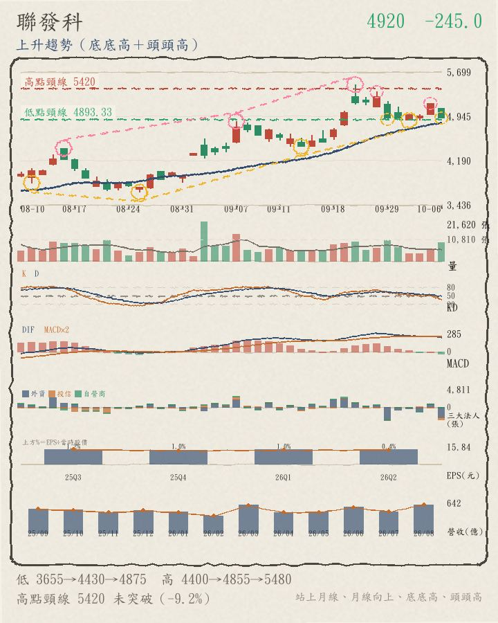
今天帶量收黑、站上月線 4831.75，離高點頸線 5420 還差 9.2%，轉折結構仍是底底高＋頭頭高。
- 月線位置：收盤 4920 在月線 4831.75 之上；5 日線 4987 也在月線之上（短均在上）；月線向上、5 日線走平或向下
- 量能：成交量是 20 日均量的 1.37 倍，比 20 日均量大不少；收黑卻量增，量價背離
- 關鍵價位：高點頸線 5420 還沒突破，差 9.2%；最近轉折高點 5480（低於 10.2%）；最近轉折低點 4875（高於 0.9%）
- 轉折結構：低點 3655、4430、4875 一路墊高 33.4%、高點 4400、4855、5480 也一路墊高 24.5%，是底底高＋頭頭高；還沒確認的轉折低點 09-29 4890、10-06 4915；還沒確認的轉折高點 09-24 5360、10-05 5165（圖上虛線小圈）
上升趨勢（底底高＋頭頭高） 成交金額 458.93 億・全榜第 3 名（上市第 3 名）
好條件 4/8：月線向上、底底高、頭頭高、外資買超
不好條件 6/8：跌破前低、今日下跌、相對大盤弱、在月線之下、量增下跌（出貨）、收盤跌破前一日低點
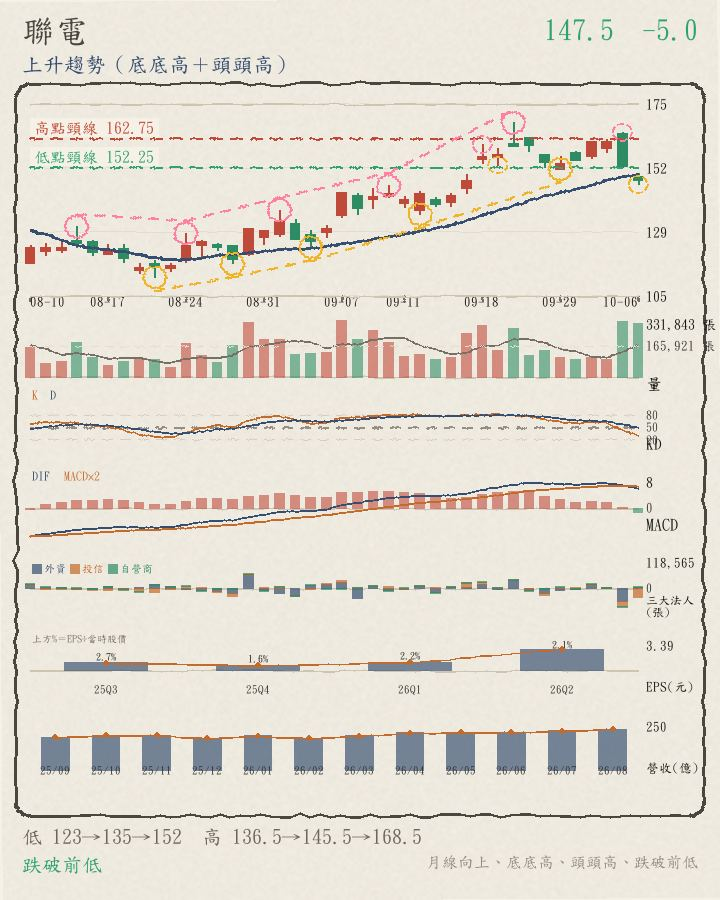
今天帶量收黑、跌破月線 149.65，跌破前一個轉折低點（高點頸線 162.75 還在收盤上方），轉折結構仍是底底高＋頭頭高。
- 月線位置：收盤 147.5 在月線 149.65 之下；5 日線 155.5 也在月線之上（短均在上）；月線向上、5 日線走平或向下
- 量能：成交量是 20 日均量的 1.70 倍，比 20 日均量大不少；收黑卻量增，量價背離
- 關鍵價位：高點頸線 162.75 還沒突破、還在收盤上方 9.4%；最近轉折高點 168.5（低於 12.5%）；最近轉折低點 151.5（低於 2.6%）
- 轉折結構：低點 123、135、151.5 一路墊高 23.2%、高點 136.5、145.5、168.5 也一路墊高 23.4%，是底底高＋頭頭高；還沒確認的轉折低點 09-21 153、10-06 146；還沒確認的轉折高點 09-18 160.5、10-05 165（圖上虛線小圈）
剛突破前高 成交金額 332.22 億・全榜第 4 名（上市第 4 名）
好條件 7/8：站上月線、月線向上、頭頭高、突破頸線、相對大盤強、外資買超、量價攻擊（收紅＋大量）
不好條件 0/8：無
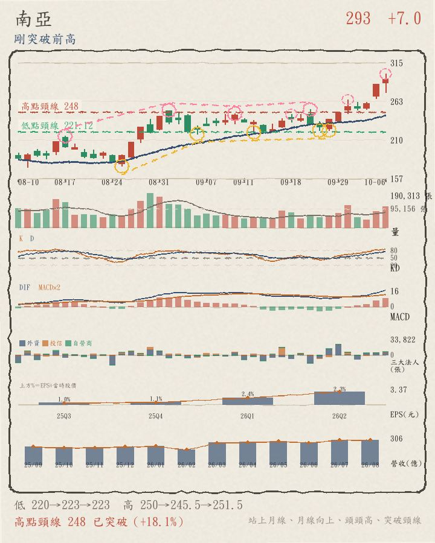
今天帶量收紅、站上月線 243.3，已站上高點頸線 248，高點還在墊高（但底部沒同步墊高）。
- 月線位置：收盤 293 在月線 243.3 之上；5 日線 269.7 也在月線之上（短均在上）；月線向上、5 日線向上
- 量能：成交量是 20 日均量的 1.73 倍，比 20 日均量大不少；收紅又量增，量價配合
- 關鍵價位：高點頸線 248 已站上；最近轉折高點 251.5（高於 16.5%）；最近轉折低點 223（高於 31.4%）
- 轉折結構：高點 250、245.5、251.5 墊高 19.3%（頭頭高），但低點 220.5、223、223 沒有同步墊高；還沒確認的轉折高點 09-30 265、10-06 300（圖上虛線小圈）
高點墊高、底部不穩 成交金額 307.12 億・全榜第 5 名（上市第 5 名）
好條件 7/8：站上月線、月線向上、頭頭高、突破頸線、相對大盤強、外資買超、量價攻擊（收紅＋大量）
不好條件 0/8：無
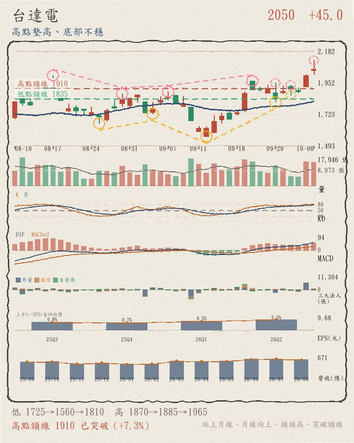
今天帶量收紅、站上月線 1816，已站上高點頸線 1910，高點還在墊高（但底部沒同步墊高）。
- 月線位置：收盤 2050 在月線 1816 之上；5 日線 1947 也在月線之上（短均在上）；月線向上、5 日線向上
- 量能：成交量是 20 日均量的 1.39 倍，比 20 日均量大不少；收紅又量增，量價配合
- 關鍵價位：高點頸線 1910 已站上；最近轉折高點 1965（高於 4.3%）；最近轉折低點 1810（高於 13.3%）
- 轉折結構：高點 1870、1885、1965 墊高 5.1%（頭頭高），但低點 1725、1560、1810 沒有同步墊高；還沒確認的轉折低點 10-01 1860；還沒確認的轉折高點 10-01 1935、10-06 2115（圖上虛線小圈）
剛突破前高 成交金額 303.44 億・全榜第 6 名（上市第 6 名）
好條件 5/8：站上月線、頭頭高、相對大盤強、外資買超、量價攻擊（收紅＋大量）
不好條件 1/8：月線下彎
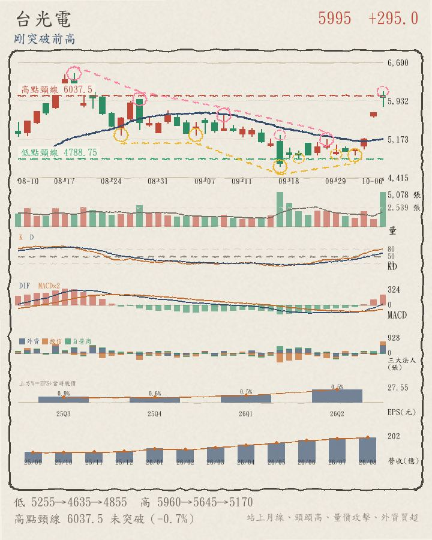
今天帶量收紅、站上月線 5180.75，離高點頸線 6037.5 還差 0.7%，高點還在墊高（但底部沒同步墊高）。
- 月線位置：收盤 5995 在月線 5180.75 之上；5 日線 5358 也在月線之上（短均在上）；月線走平或向下、5 日線向上
- 量能：成交量是 20 日均量的 2.77 倍，比 20 日均量大不少；收紅又量增，量價配合
- 關鍵價位：高點頸線 6037.5 還沒突破，差 0.7%；最近轉折高點 5170（高於 16.0%）；最近轉折低點 4855（高於 23.5%）
- 轉折結構：高點 5960、5645、5170 墊高 18.3%（頭頭高），但低點 5255、4635、4855 沒有同步墊高；還沒確認的轉折低點 09-21 4795、09-29 4870；還沒確認的轉折高點 09-17 5255、10-06 6115（圖上虛線小圈）
剛突破前高 成交金額 274.3 億・全榜第 8 名（上市第 7 名）
好條件 6/8：站上月線、月線向上、頭頭高、突破頸線、相對大盤強、量價攻擊（收紅＋大量）
不好條件 1/8：外資賣超
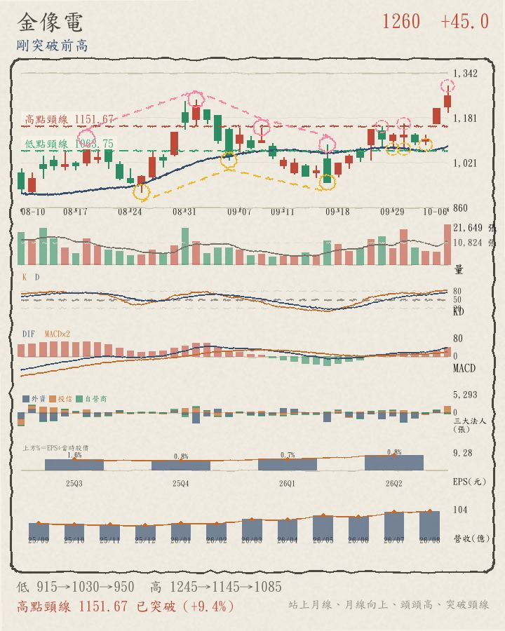
今天帶量收紅、站上月線 1078.45，已站上高點頸線 1151.67，高點還在墊高（但底部沒同步墊高）。
- 月線位置：收盤 1260 在月線 1078.45 之上；5 日線 1159 也在月線之上（短均在上）；月線向上、5 日線向上
- 量能：成交量是 20 日均量的 2.57 倍，比 20 日均量大不少；收紅又量增，量價配合
- 關鍵價位：高點頸線 1151.67 已站上；最近轉折高點 1085（高於 16.1%）；最近轉折低點 950（高於 32.6%）
- 轉折結構：高點 1245、1145、1085 墊高 19.4%（頭頭高），但低點 915、1030、950 沒有同步墊高；還沒確認的轉折低點 09-30 1070、10-02 1085；還沒確認的轉折高點 09-30 1160、10-06 1295（圖上虛線小圈）
剛突破前高 成交金額 254.79 億・全榜第 9 名（上市第 8 名）
好條件 7/8：站上月線、月線向上、頭頭高、突破頸線、相對大盤強、外資買超、量價攻擊（收紅＋大量）
不好條件 0/8：無
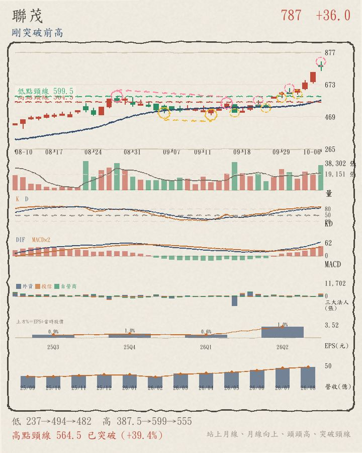
今天帶量收紅、站上月線 574.25，已站上高點頸線 564.5，高點還在墊高（但底部沒同步墊高）。
- 月線位置：收盤 787 在月線 574.25 之上；5 日線 697.2 也在月線之上（短均在上）；月線向上、5 日線向上
- 量能：成交量是 20 日均量的 1.83 倍，比 20 日均量大不少；收紅又量增，量價配合
- 關鍵價位：高點頸線 564.5 已站上；最近轉折高點 555（高於 41.8%）；最近轉折低點 482（高於 63.3%）
- 轉折結構：高點 387.5、599、555 墊高 47.4%（頭頭高），但低點 237、493.5、482 沒有同步墊高；還沒確認的轉折低點 09-29 588、10-01 611；還沒確認的轉折高點 09-30 649、10-06 818（圖上虛線小圈）
底部墊高、突破前高 成交金額 250.48 億・全榜第 10 名（上市第 9 名）
好條件 7/8：站上月線、月線向上、底底高、頭頭高、突破頸線、相對大盤強、量價攻擊（收紅＋大量）
不好條件 1/8：外資賣超
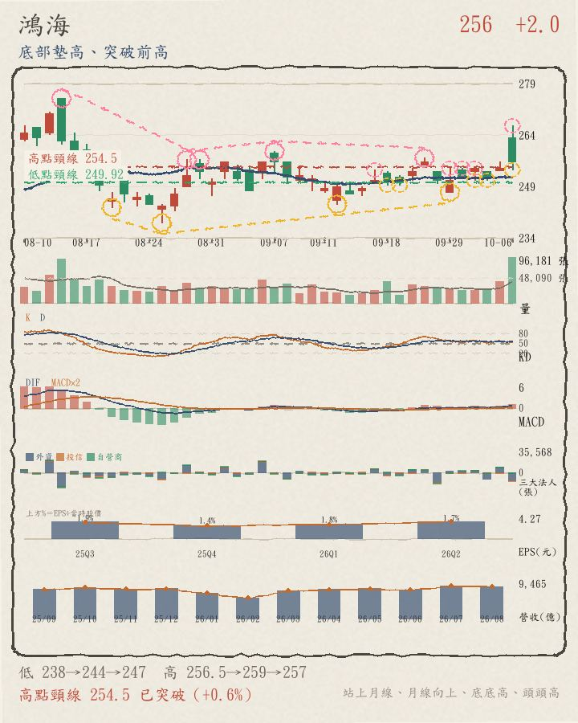
今天帶量收紅、站上月線 251.45，已站上高點頸線 254.5，轉折結構仍是底底高＋頭頭高。
- 月線位置：收盤 256 在月線 251.45 之上；5 日線 253.3 也在月線之上（短均在上）；月線向上、5 日線向上
- 量能：成交量是 20 日均量的 3.18 倍，比 20 日均量大不少；收紅又量增，量價配合
- 關鍵價位：高點頸線 254.5 已站上；最近轉折高點 257（低於 0.4%）；最近轉折低點 247（高於 3.6%）
- 轉折結構：低點 238、243.5、247 一路墊高 3.8%、高點 256.5、259、257 也一路墊高 3.7%，是底底高＋頭頭高；還沒確認的轉折低點 10-02 250.5、10-06 253.5；還沒確認的轉折高點 10-01 254、10-06 266.5（圖上虛線小圈）
底部墊高、突破前高 成交金額 245.94 億・全榜第 11 名（上市第 10 名）
好條件 6/8：站上月線、底底高、頭頭高、相對大盤強、外資買超、量價攻擊（收紅＋大量）
不好條件 1/8：月線下彎
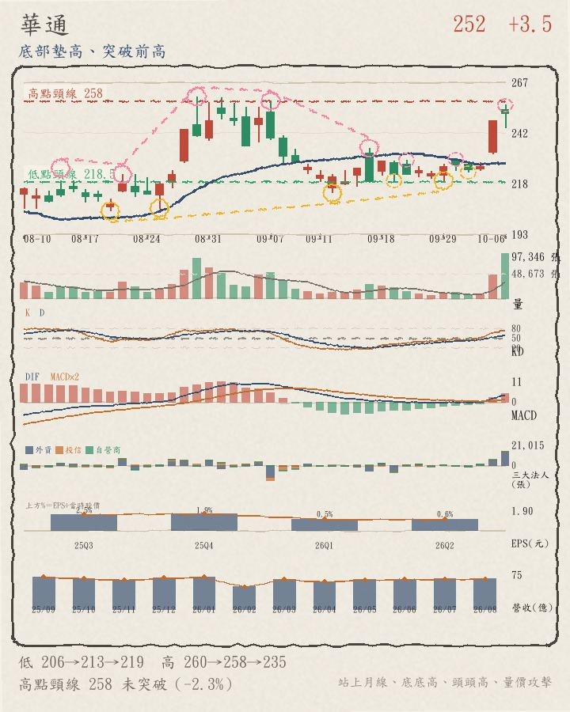
今天帶量收紅、站上月線 227.575，離高點頸線 258 還差 2.3%，轉折結構仍是底底高＋頭頭高。
- 月線位置：收盤 252 在月線 227.575 之上；5 日線 235.5 也在月線之上（短均在上）；月線走平或向下、5 日線向上
- 量能：成交量是 20 日均量的 4.55 倍，比 20 日均量大不少；收紅又量增，量價配合
- 關鍵價位：高點頸線 258 還沒突破，差 2.3%；最近轉折高點 235（高於 7.2%）；最近轉折低點 219（高於 15.1%）
- 轉折結構：低點 205.5、213、219 一路墊高 6.6%、高點 260、258、235 也一路墊高 8.9%，是底底高＋頭頭高；還沒確認的轉折低點 09-21 219、10-01 223；還沒確認的轉折高點 09-30 229.5、10-06 256（圖上虛線小圈）
底部墊高、突破前高 成交金額 237 億・全榜第 12 名（上市第 11 名）
好條件 6/8：站上月線、月線向上、底底高、頭頭高、突破頸線、外資買超
不好條件 3/8：今日下跌、相對大盤弱、量增下跌（出貨）
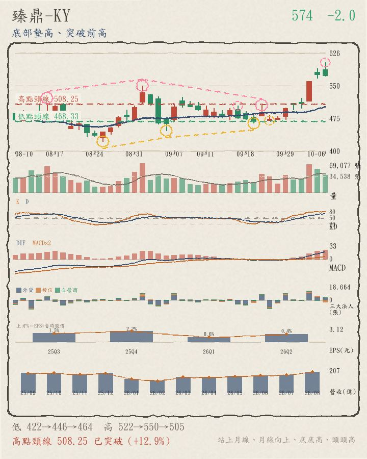
今天帶量收黑、站上月線 502.05，已站上高點頸線 508.25，轉折結構仍是底底高＋頭頭高。
- 月線位置：收盤 574 在月線 502.05 之上；5 日線 545.6 也在月線之上（短均在上）；月線向上、5 日線向上
- 量能：成交量是 20 日均量的 1.33 倍，比 20 日均量大不少；收黑卻量增，量價背離
- 關鍵價位：高點頸線 508.25 已站上；最近轉折高點 505（高於 13.7%）；最近轉折低點 463.5（高於 23.8%）
- 轉折結構：低點 421.5、446.5、463.5 一路墊高 10.0%、高點 522、550、505 也一路墊高 19.6%，是底底高＋頭頭高；還沒確認的轉折低點 09-23 470；還沒確認的轉折高點 09-17 504、10-06 604（圖上虛線小圈）
底部墊高、突破前高 成交金額 213.51 億・全榜第 13 名（上市第 12 名）
好條件 8/8：站上月線、月線向上、底底高、頭頭高、突破頸線、相對大盤強、外資買超、量價攻擊（收紅＋大量）
不好條件 0/8：無
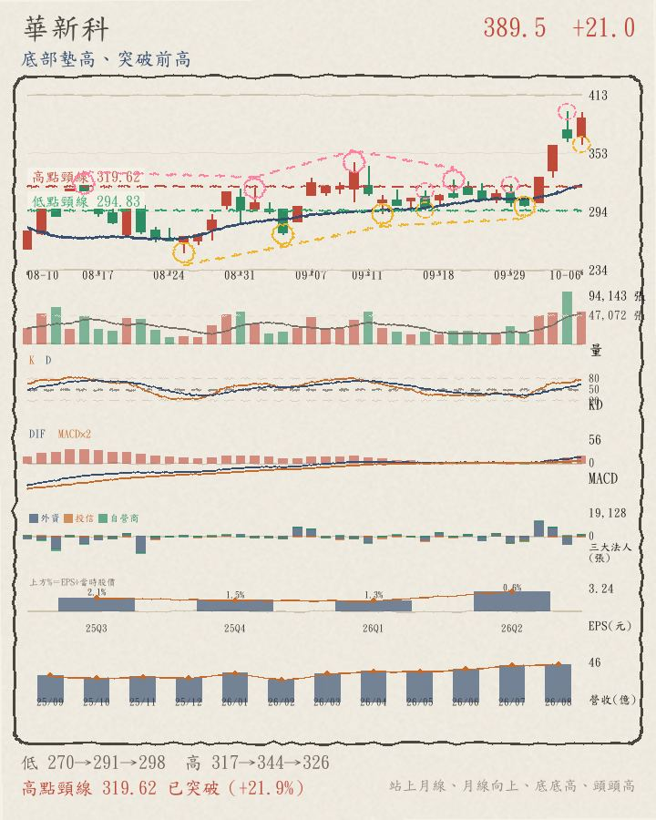
今天帶量收紅、站上月線 320.65，已站上高點頸線 319.62，轉折結構仍是底底高＋頭頭高。
- 月線位置：收盤 389.5 在月線 320.65 之上；5 日線 349.6 也在月線之上（短均在上）；月線向上、5 日線向上
- 量能：成交量是 20 日均量的 1.74 倍，比 20 日均量大不少；收紅又量增，量價配合
- 關鍵價位：高點頸線 319.62 已站上；最近轉折高點 326（高於 19.5%）；最近轉折低點 298.5（高於 30.5%）
- 轉折結構：低點 270、291、298.5 一路墊高 10.6%、高點 317、344、326 也一路墊高 21.5%，是底底高＋頭頭高；還沒確認的轉折低點 09-17 295、10-06 362.5；還沒確認的轉折高點 09-29 321、10-05 396（圖上虛線小圈）
高點墊高、底部不穩 成交金額 188.51 億・全榜第 14 名（上市第 13 名）
好條件 4/8：站上月線、月線向上、頭頭高、突破頸線
不好條件 4/8：今日下跌、相對大盤弱、外資賣超、收盤跌破前一日低點
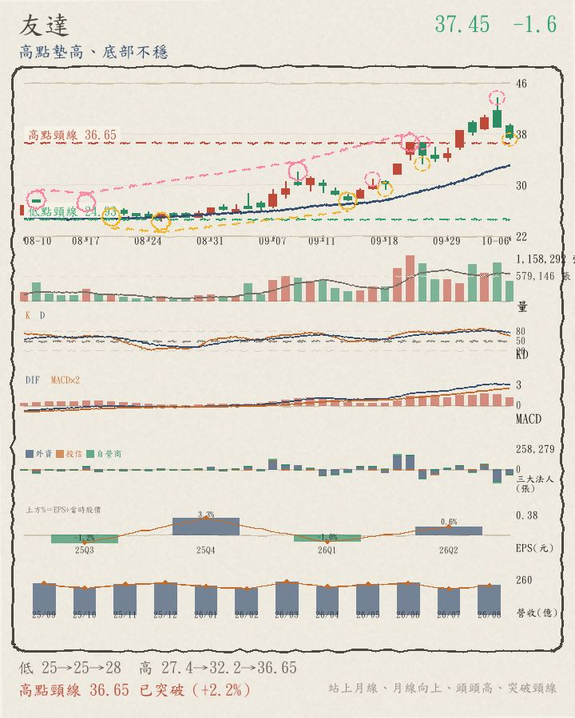
今天收黑、成交量也比平均少、站上月線 33.215，已站上高點頸線 36.65，高點還在墊高（但底部沒同步墊高）。
- 月線位置：收盤 37.45 在月線 33.215 之上；5 日線 38.76 也在月線之上（短均在上）；月線向上、5 日線向上
- 量能：成交量是 20 日均量的 0.86 倍，比 20 日均量少一些
- 關鍵價位：高點頸線 36.65 已站上；最近轉折高點 36.65（高於 2.2%）；最近轉折低點 27.75（高於 35.0%）
- 轉折結構：高點 27.4、32.2、36.65 墊高 33.8%（頭頭高），但低點 25.25、24.6、27.75 沒有同步墊高；還沒確認的轉折低點 09-23 33.4、10-06 37.15；還沒確認的轉折高點 09-23 36.65、10-05 43.55（圖上虛線小圈）
剛突破前高 成交金額 184.94 億・全榜第 15 名（上市第 14 名）
好條件 3/8：站上月線、月線向上、頭頭高
不好條件 4/8：今日下跌、相對大盤弱、外資賣超、收盤跌破前一日低點
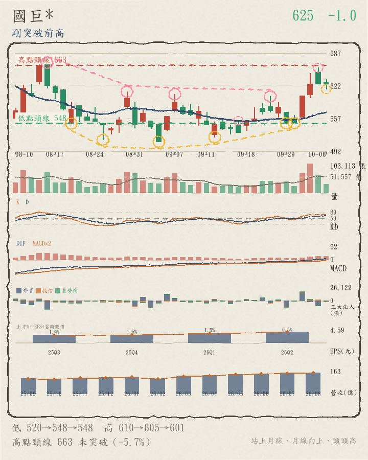
今天收黑、成交量也比平均少、站上月線 569.5，離高點頸線 663 還差 5.7%，高點還在墊高（但底部沒同步墊高）。
- 月線位置：收盤 625 在月線 569.5 之上；5 日線 605.4 也在月線之上（短均在上）；月線向上、5 日線向上
- 量能：成交量是 20 日均量的 0.73 倍，比 20 日均量少很多
- 關鍵價位：高點頸線 663 還沒突破，差 5.7%；最近轉折高點 601（高於 4.0%）；最近轉折低點 548（高於 14.1%）
- 轉折結構：高點 610、605、601 墊高 9.5%（頭頭高），但低點 520、548、548 沒有同步墊高；還沒確認的轉折低點 10-06 615；還沒確認的轉折高點 09-17 553、10-05 658（圖上虛線小圈）
剛突破前高 成交金額 167.2 億・全榜第 16 名（上市第 15 名）
好條件 5/8：站上月線、月線向上、頭頭高、突破頸線、外資買超
不好條件 2/8：今日下跌、相對大盤弱
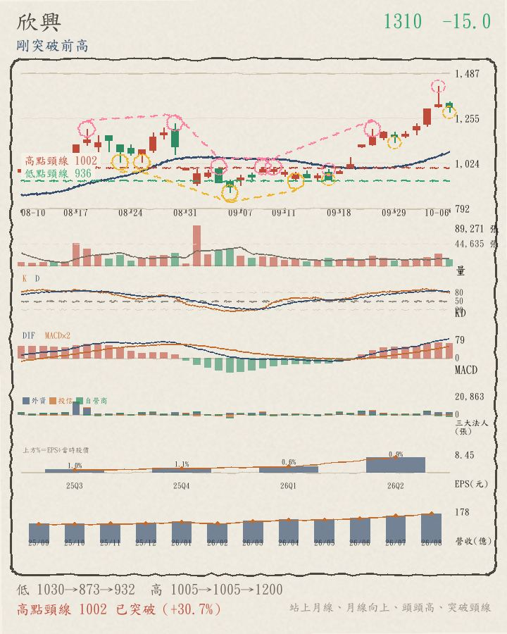
今天收黑、成交量也比平均少、站上月線 1082.5，已站上高點頸線 1002，高點還在墊高（但底部沒同步墊高）。
- 月線位置：收盤 1310 在月線 1082.5 之上；5 日線 1266 也在月線之上（短均在上）；月線向上、5 日線向上
- 量能：成交量是 20 日均量的 0.76 倍，比 20 日均量少很多
- 關鍵價位：高點頸線 1002 已站上；最近轉折高點 1200（高於 9.2%）；最近轉折低點 932（高於 40.6%）
- 轉折結構：高點 1005、1005、1200 墊高 18.3%（頭頭高），但低點 1030、873、932 沒有同步墊高；還沒確認的轉折低點 09-29 1130、10-06 1285；還沒確認的轉折高點 09-17 993、10-05 1420（圖上虛線小圈）
世芯-KY 3661 上市
4180 +230.0
剛突破前高 成交金額 163.81 億・全榜第 17 名（上市第 16 名）
好條件 5/8：站上月線、頭頭高、相對大盤強、外資買超、量價攻擊（收紅＋大量）
不好條件 1/8：月線下彎
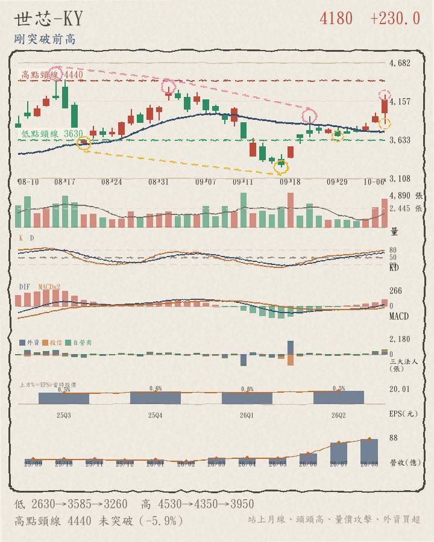
今天帶量收紅、站上月線 3742.25，離高點頸線 4440 還差 5.9%，高點還在墊高（但底部沒同步墊高）。
- 月線位置：收盤 4180 在月線 3742.25 之上；5 日線 3889 也在月線之上（短均在上）；月線走平或向下、5 日線向上
- 量能：成交量是 20 日均量的 1.81 倍，比 20 日均量大不少；收紅又量增，量價配合
- 關鍵價位：高點頸線 4440 還沒突破，差 5.9%；最近轉折高點 3950（高於 5.8%）；最近轉折低點 3260（高於 28.2%）
- 轉折結構：高點 4530、4350、3950 墊高 7.3%（頭頭高），但低點 2630、3585、3260 沒有同步墊高；還沒確認的轉折低點 09-29 3675、10-06 3850；還沒確認的轉折高點 10-06 4240（圖上虛線小圈）
上升趨勢（底底高＋頭頭高） 成交金額 163.45 億・全榜第 18 名（上市第 17 名）
好條件 4/8：站上月線、月線向上、底底高、頭頭高
不好條件 4/8：今日下跌、相對大盤弱、量增下跌（出貨）、外資賣超
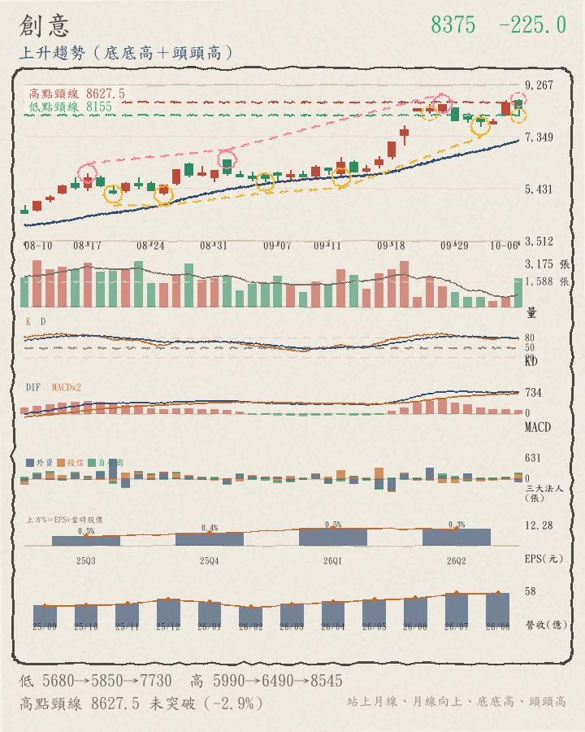
今天帶量收黑、站上月線 7203，離高點頸線 8627.5 還差 2.9%，轉折結構仍是底底高＋頭頭高。
- 月線位置：收盤 8375 在月線 7203 之上；5 日線 8163 也在月線之上（短均在上）；月線向上、5 日線走平或向下
- 量能：成交量是 20 日均量的 1.29 倍，比 20 日均量大不少；收黑卻量增，量價背離
- 關鍵價位：高點頸線 8627.5 還沒突破，差 2.9%；最近轉折高點 8545（低於 2.0%）；最近轉折低點 7730（高於 8.3%）
- 轉折結構：低點 5680、5850、7730 一路墊高 36.1%、高點 5990、6490、8545 也一路墊高 42.7%，是底底高＋頭頭高；還沒確認的轉折低點 09-23 8200、10-06 8110；還沒確認的轉折高點 10-06 8710（圖上虛線小圈）
剛突破前高 成交金額 163.08 億・全榜第 19 名（上市第 18 名）
好條件 4/8：站上月線、月線向上、頭頭高、外資買超
不好條件 2/8：今日下跌、相對大盤弱
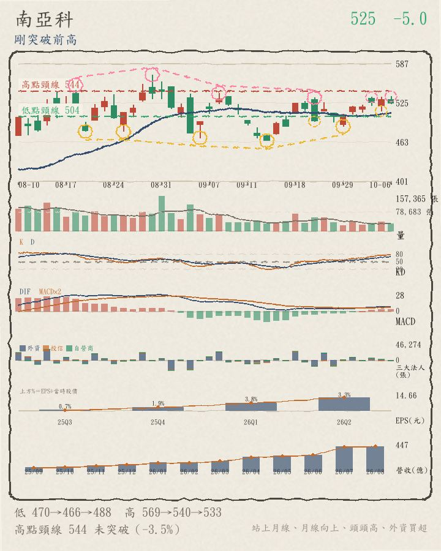
今天收黑、成交量也比平均少、站上月線 508.95，離高點頸線 544 還差 3.5%，高點還在墊高（但底部沒同步墊高）。
- 月線位置：收盤 525 在月線 508.95 之上；5 日線 523.8 也在月線之上（短均在上）；月線向上、5 日線向上
- 量能：成交量是 20 日均量的 0.68 倍，比 20 日均量少很多
- 關鍵價位：高點頸線 544 還沒突破，差 3.5%；最近轉折高點 533（低於 1.5%）；最近轉折低點 488（高於 7.6%）
- 轉折結構：高點 569、540、533 墊高 0.4%（頭頭高），但低點 470、465.5、488 沒有同步墊高；還沒確認的轉折低點 09-22 496、10-05 512；還沒確認的轉折高點 10-02 534、10-06 535（圖上虛線小圈）
剛突破前高 成交金額 148.98 億・全榜第 21 名（上市第 19 名）
好條件 5/8：站上月線、頭頭高、突破頸線、相對大盤強、量價攻擊（收紅＋大量）
不好條件 2/8：外資賣超、月線下彎
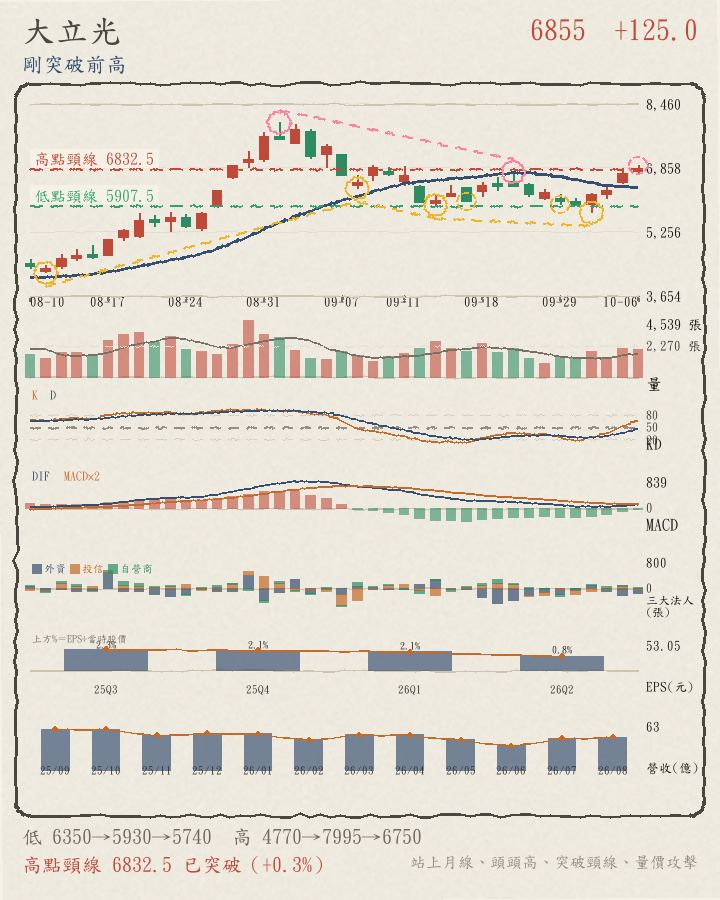
今天帶量收紅、站上月線 6371，已站上高點頸線 6832.5，高點還在墊高（但底部沒同步墊高）。
- 月線位置：收盤 6855 在月線 6371 之上；5 日線 6405 也在月線之上（短均在上）；月線走平或向下、5 日線向上
- 量能：成交量是 20 日均量的 1.16 倍，比 20 日均量大不少；收紅又量增，量價配合
- 關鍵價位：高點頸線 6832.5 已站上；最近轉折高點 6750（高於 1.6%）；最近轉折低點 5740（高於 19.4%）
- 轉折結構：高點 4770、7995、6750 墊高 2.4%（頭頭高），但低點 6350、5930、5740 沒有同步墊高；還沒確認的轉折低點 09-17 6020、09-29 5940；還沒確認的轉折高點 10-06 6915（圖上虛線小圈）
貿聯-KY 3665 上市
2325 -160.0
高點墊高、底部不穩 成交金額 130.96 億・全榜第 23 名（上市第 20 名）
好條件 4/8：站上月線、月線向上、頭頭高、外資買超
不好條件 4/8：今日下跌、相對大盤弱、量增下跌（出貨）、收盤跌破前一日低點
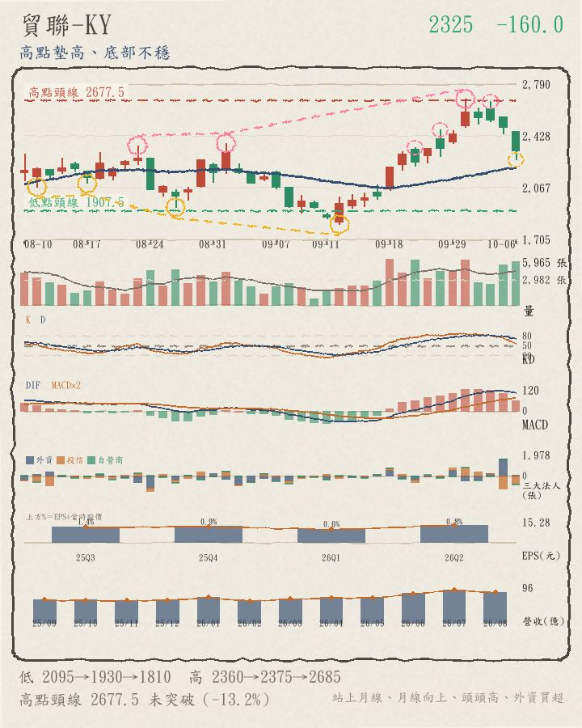
今天帶量收黑、站上月線 2205.25，離高點頸線 2677.5 還差 13.2%，高點還在墊高（但底部沒同步墊高）。
- 月線位置：收盤 2325 在月線 2205.25 之上；5 日線 2500 也在月線之上（短均在上）；月線向上、5 日線向上
- 量能：成交量是 20 日均量的 1.70 倍，比 20 日均量大不少；收黑卻量增，量價背離
- 關鍵價位：高點頸線 2677.5 還沒突破，差 13.2%；最近轉折高點 2685（低於 13.4%）；最近轉折低點 1810（高於 28.5%）
- 轉折結構：高點 2360、2375、2685 墊高 13.8%（頭頭高），但低點 2095、1930、1810 沒有同步墊高；還沒確認的轉折低點 10-06 2260；還沒確認的轉折高點 09-24 2470、10-02 2670（圖上虛線小圈）
高點墊高、底部不穩 成交金額 120.3 億・全榜第 24 名（上市第 21 名）
好條件 4/8：站上月線、頭頭高、相對大盤強、量價攻擊（收紅＋大量）
不好條件 2/8：外資賣超、月線下彎
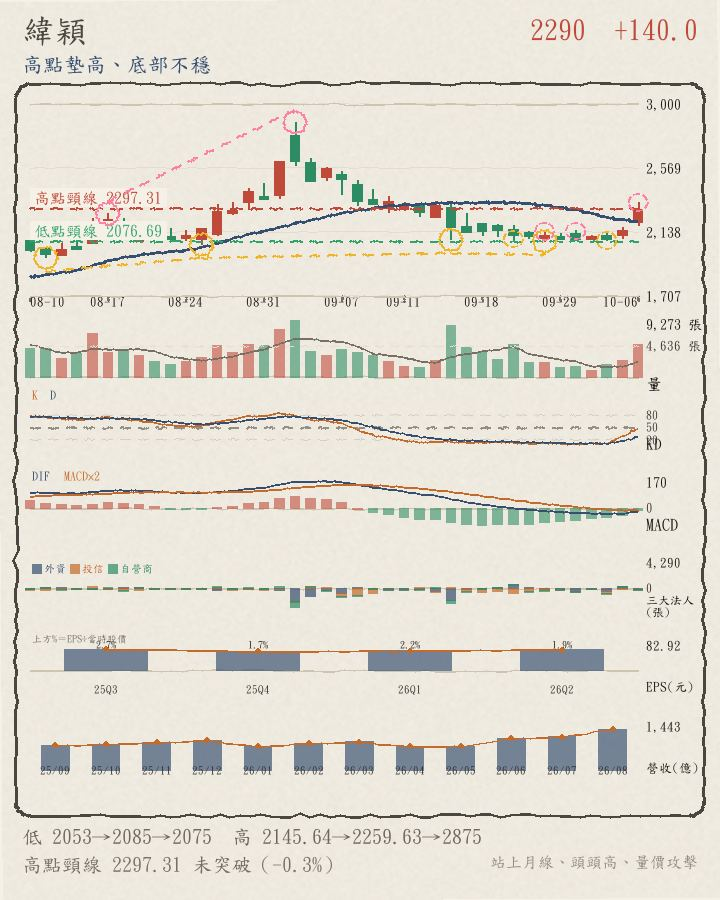
今天帶量收紅、站上月線 2207.25，離高點頸線 2297.31 還差 0.3%，高點還在墊高（但底部沒同步墊高）。
- 月線位置：收盤 2290 在月線 2207.25 之上；5 日線 2145 也在月線之下（短均在下）；月線走平或向下、5 日線向上
- 量能：成交量是 20 日均量的 1.68 倍，比 20 日均量大不少；收紅又量增，量價配合
- 關鍵價位：高點頸線 2297.31 還沒突破，差 0.3%；最近轉折高點 2875（低於 20.3%）；最近轉折低點 2075（高於 10.4%）
- 轉折結構：高點 2145.64、2259.63、2875 墊高 34.0%（頭頭高），但低點 2053.44、2085、2075 沒有同步墊高；還沒確認的轉折低點 09-22 2090、10-02 2080；還沒確認的轉折高點 09-30 2145、10-06 2335（圖上虛線小圈）
剛突破前高 成交金額 118.56 億・全榜第 25 名（上市第 22 名）
好條件 7/8：站上月線、月線向上、頭頭高、突破頸線、相對大盤強、外資買超、量價攻擊（收紅＋大量）
不好條件 0/8：無
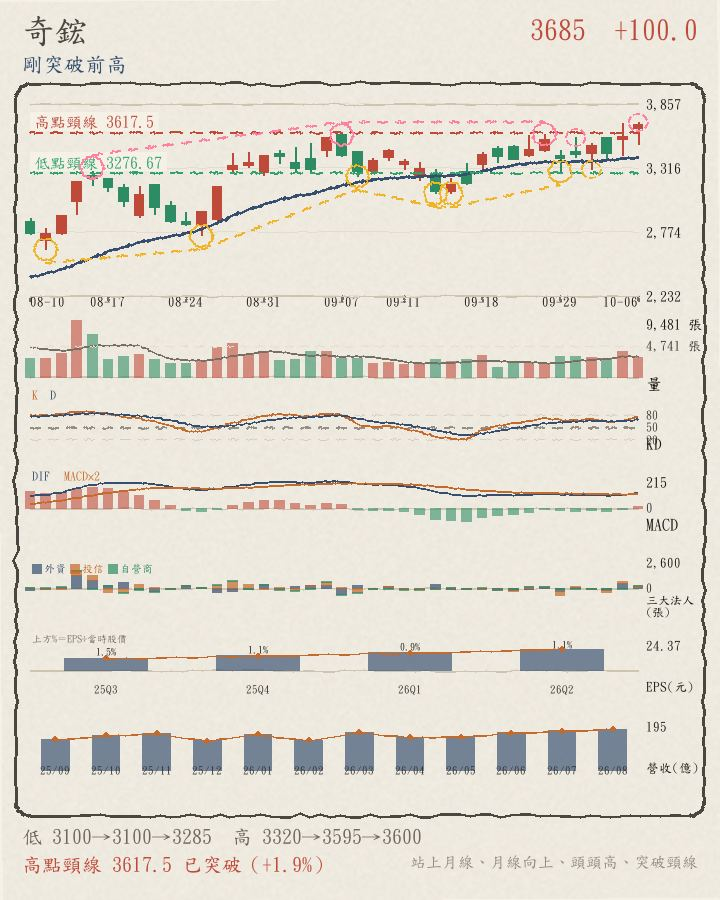
今天帶量收紅、站上月線 3400.75，已站上高點頸線 3617.5，高點還在墊高（但底部沒同步墊高）。
- 月線位置：收盤 3685 在月線 3400.75 之上；5 日線 3531 也在月線之上（短均在上）；月線向上、5 日線向上
- 量能：成交量是 20 日均量的 1.14 倍，比 20 日均量大一些；收紅又量增，量價配合
- 關鍵價位：高點頸線 3617.5 已站上；最近轉折高點 3600（高於 2.4%）；最近轉折低點 3285（高於 12.2%）
- 轉折結構：高點 3320、3595、3600 墊高 2.8%（頭頭高），但低點 3100、3100、3285 沒有同步墊高；還沒確認的轉折低點 10-01 3300；還沒確認的轉折高點 09-30 3575、10-06 3700（圖上虛線小圈）
底部墊高、突破前高 成交金額 115.88 億・全榜第 26 名（上市第 23 名）
好條件 7/8：站上月線、月線向上、底底高、頭頭高、突破頸線、相對大盤強、外資買超
不好條件 0/8：無
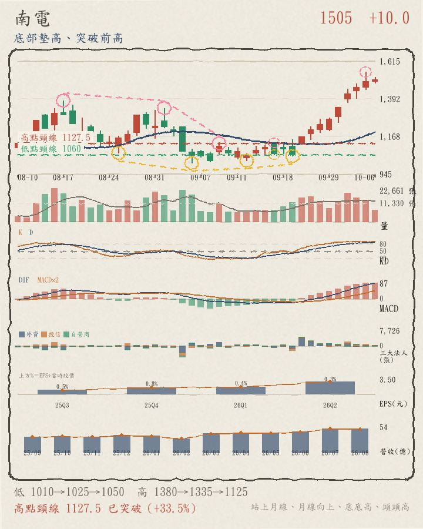
今天收紅、但成交量比平均少、站上月線 1195.5，已站上高點頸線 1127.5，轉折結構仍是底底高＋頭頭高。
- 月線位置：收盤 1505 在月線 1195.5 之上；5 日線 1444 也在月線之上（短均在上）；月線向上、5 日線向上
- 量能：成交量是 20 日均量的 0.68 倍，比 20 日均量少很多；收紅但量縮，量價背離
- 關鍵價位：高點頸線 1127.5 已站上；最近轉折高點 1125（高於 33.8%）；最近轉折低點 1050（高於 43.3%）
- 轉折結構：低點 1010、1025、1050 一路墊高 4.0%、高點 1380、1335、1125 也一路墊高 37.8%，是底底高＋頭頭高；還沒確認的轉折低點 09-17 1060；還沒確認的轉折高點 09-17 1130、10-05 1550（圖上虛線小圈）
剛突破前高 成交金額 107.75 億・全榜第 29 名（上市第 24 名）
好條件 5/8：站上月線、月線向上、頭頭高、突破頸線、外資買超
不好條件 2/8：今日下跌、相對大盤弱
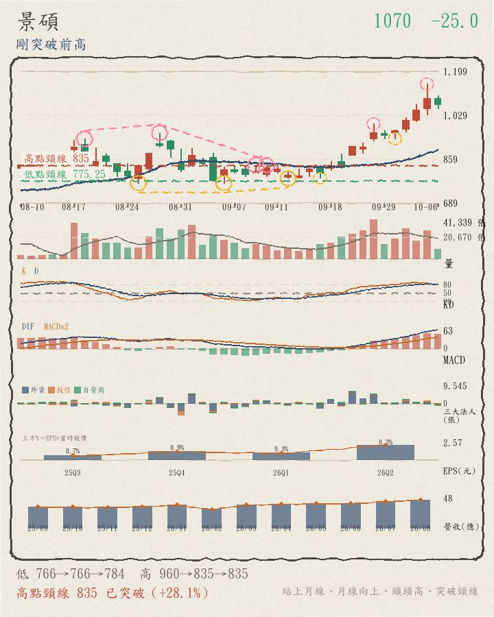
今天收黑、成交量也比平均少、站上月線 893.9，已站上高點頸線 835，高點還在墊高（但底部沒同步墊高）。
- 月線位置：收盤 1070 在月線 893.9 之上；5 日線 1039 也在月線之上（短均在上）；月線向上、5 日線向上
- 量能：成交量是 20 日均量的 0.53 倍，比 20 日均量少很多
- 關鍵價位：高點頸線 835 已站上；最近轉折高點 835（高於 28.1%）；最近轉折低點 784（高於 36.5%）
- 轉折結構：高點 960、835、835 墊高 37.7%（頭頭高），但低點 766、766、784 沒有同步墊高；還沒確認的轉折低點 09-17 785、09-30 937；還沒確認的轉折高點 09-24 996、10-05 1150（圖上虛線小圈）
剛突破前高 成交金額 105.3 億・全榜第 30 名（上市第 25 名）
好條件 4/8：站上月線、月線向上、頭頭高、外資買超
不好條件 2/8：今日下跌、相對大盤弱
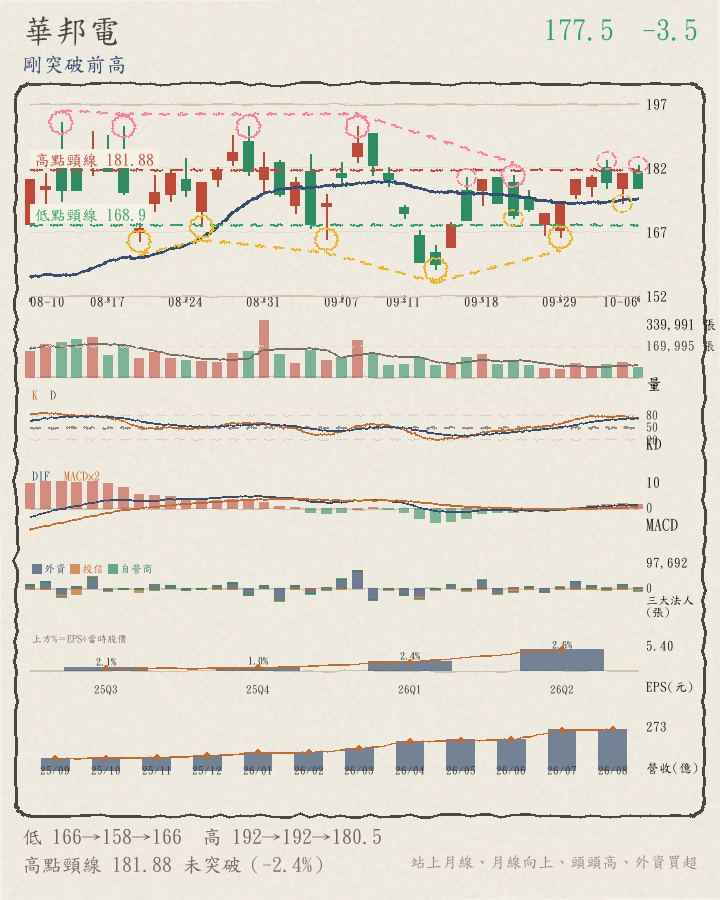
今天收黑、成交量也比平均少、站上月線 175，離高點頸線 181.88 還差 2.4%，高點還在墊高（但底部沒同步墊高）。
- 月線位置：收盤 177.5 在月線 175 之上；5 日線 179.4 也在月線之上（短均在上）；月線向上、5 日線向上
- 量能：成交量是 20 日均量的 0.62 倍，比 20 日均量少很多
- 關鍵價位：高點頸線 181.88 還沒突破，差 2.4%；最近轉折高點 180.5（低於 1.7%）；最近轉折低點 166（高於 6.9%）
- 轉折結構：高點 192、192、180.5 墊高 1.9%（頭頭高），但低點 165.5、158.5、166 沒有同步墊高；還沒確認的轉折低點 09-22 170.5、10-05 174；還沒確認的轉折高點 10-02 184、10-06 183（圖上虛線小圈）
剛突破前高 成交金額 100.38 億・全榜第 31 名（上市第 26 名）
好條件 7/8：站上月線、月線向上、頭頭高、突破頸線、相對大盤強、外資買超、量價攻擊（收紅＋大量）
不好條件 0/8：無
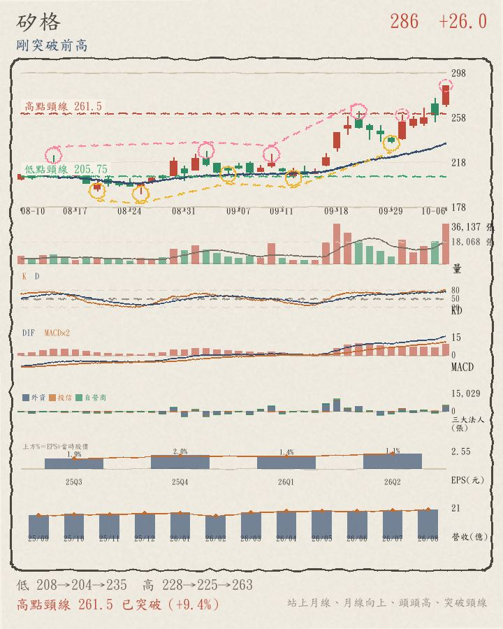
今天帶量收紅、站上月線 234.9，已站上高點頸線 261.5，高點還在墊高（但底部沒同步墊高）。
- 月線位置：收盤 286 在月線 234.9 之上；5 日線 262.8 也在月線之上（短均在上）；月線向上、5 日線向上
- 量能：成交量是 20 日均量的 2.83 倍，比 20 日均量大不少；收紅又量增，量價配合
- 關鍵價位：高點頸線 261.5 已站上；最近轉折高點 263（高於 8.7%）；最近轉折低點 235（高於 21.7%）
- 轉折結構：高點 228、225、263 墊高 8.7%（頭頭高），但低點 207.5、204、235 沒有同步墊高；還沒確認的轉折高點 09-30 260、10-06 286（圖上虛線小圈）
剛突破前高 成交金額 98.66 億・全榜第 32 名（上市第 27 名）
好條件 7/8：站上月線、月線向上、頭頭高、突破頸線、相對大盤強、外資買超、量價攻擊（收紅＋大量）
不好條件 0/8：無
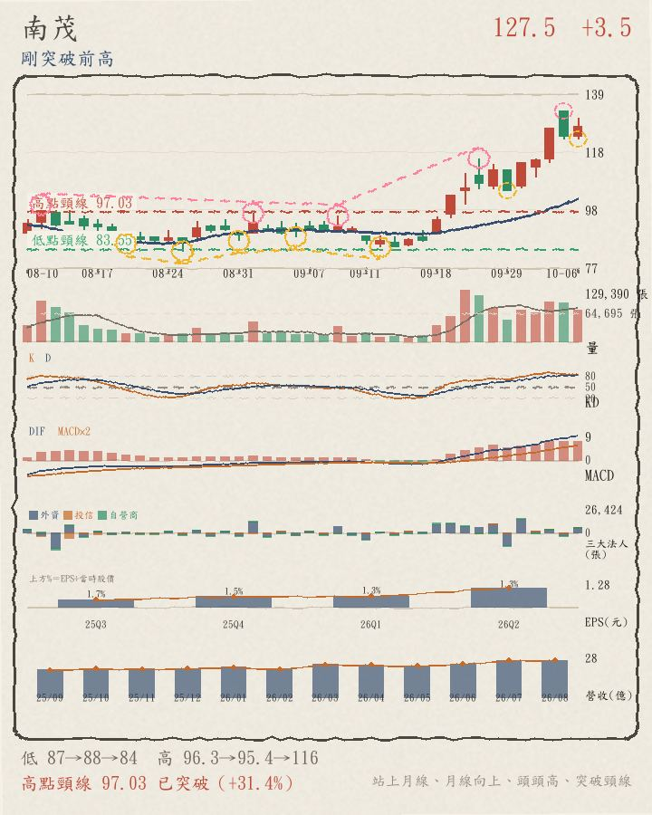
今天帶量收紅、站上月線 101.5，已站上高點頸線 97.03，高點還在墊高（但底部沒同步墊高）。
- 月線位置：收盤 127.5 在月線 101.5 之上；5 日線 121.7 也在月線之上（短均在上）；月線向上、5 日線向上
- 量能：成交量是 20 日均量的 1.56 倍，比 20 日均量大不少；收紅又量增，量價配合
- 關鍵價位：高點頸線 97.03 已站上；最近轉折高點 116（高於 9.9%）；最近轉折低點 84.3（高於 51.2%）
- 轉折結構：高點 96.3、95.4、116 墊高 14.7%（頭頭高），但低點 86.6、87.9、84.3 沒有同步墊高；還沒確認的轉折低點 09-29 104.5、10-06 123；還沒確認的轉折高點 10-05 133（圖上虛線小圈）
剛突破前高 成交金額 97.72 億・全榜第 33 名（上市第 28 名）
好條件 2/8：站上月線、頭頭高
不好條件 5/8：今日下跌、相對大盤弱、量增下跌（出貨）、外資賣超、月線下彎
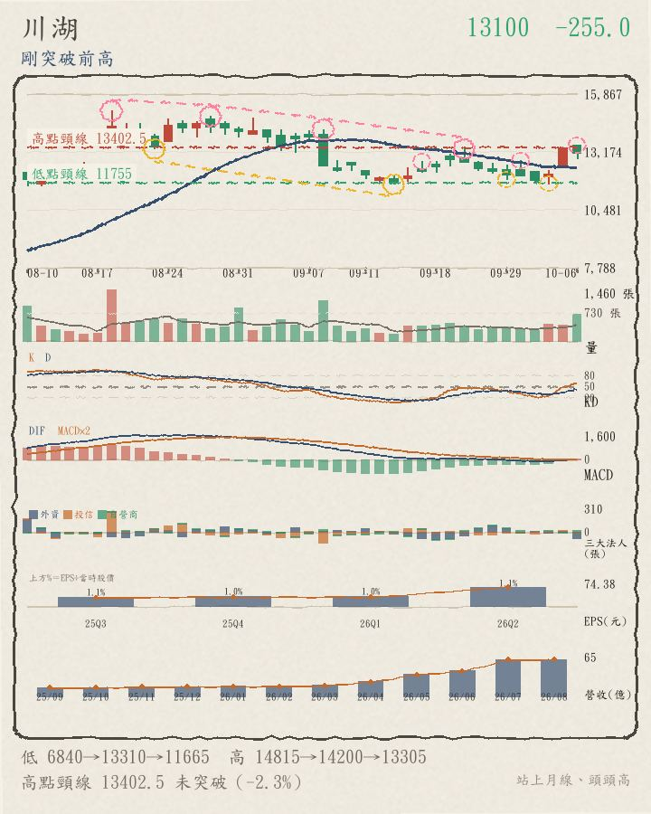
今天帶量收黑、站上月線 12443，離高點頸線 13402.5 還差 2.3%，高點還在墊高（但底部沒同步墊高）。
- 月線位置：收盤 13100 在月線 12443 之上；5 日線 12498 也在月線之上（短均在上）；月線走平或向下、5 日線向上
- 量能：成交量是 20 日均量的 1.84 倍，比 20 日均量大不少；收黑卻量增，量價背離
- 關鍵價位：高點頸線 13402.5 還沒突破，差 2.3%；最近轉折高點 13305（低於 1.5%）；最近轉折低點 11665（高於 12.3%）
- 轉折結構：高點 14815、14200、13305 墊高 1.5%（頭頭高），但低點 6840、13310、11665 沒有同步墊高；還沒確認的轉折低點 09-29 11900、10-02 11700；還沒確認的轉折高點 09-30 12785、10-06 13500（圖上虛線小圈）
剛突破前高 成交金額 93.91 億・全榜第 35 名（上市第 29 名）
好條件 3/8：站上月線、月線向上、頭頭高
不好條件 5/8：今日下跌、相對大盤弱、量增下跌（出貨）、外資賣超、收盤跌破前一日低點
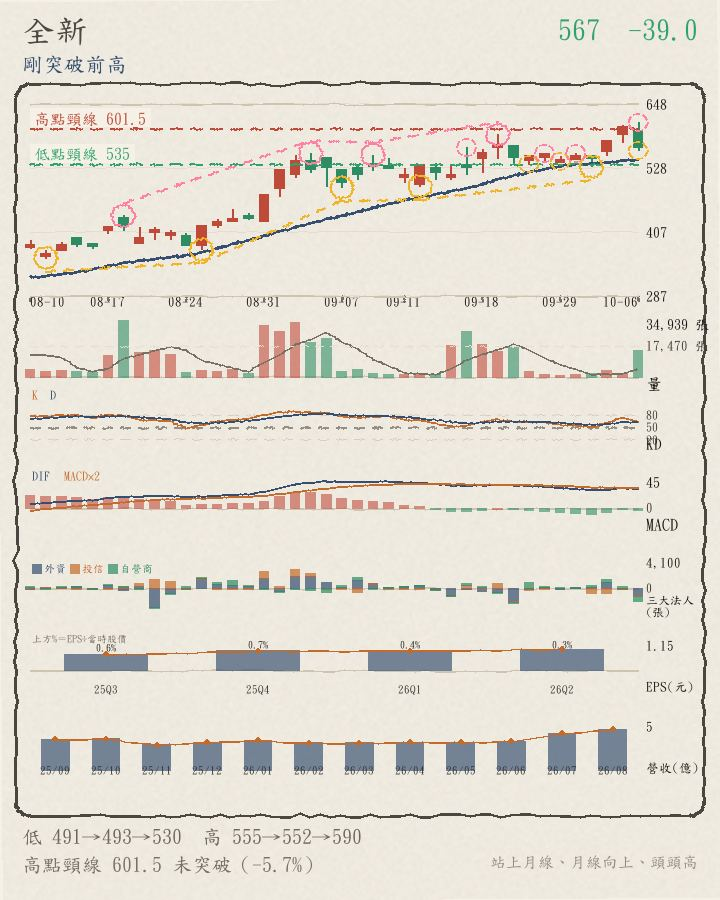
今天帶量收黑、站上月線 543.7，離高點頸線 601.5 還差 5.7%，高點還在墊高（但底部沒同步墊高）。
- 月線位置：收盤 567 在月線 543.7 之上；5 日線 570.2 也在月線之上（短均在上）；月線向上、5 日線向上
- 量能：成交量是 20 日均量的 2.05 倍，比 20 日均量大不少；收黑卻量增，量價背離
- 關鍵價位：高點頸線 601.5 還沒突破，差 5.7%；最近轉折高點 590（低於 3.9%）；最近轉折低點 530（高於 7.0%）
- 轉折結構：高點 555、552、590 墊高 3.9%（頭頭高），但低點 491、493、530 沒有同步墊高；還沒確認的轉折低點 09-29 540、10-06 560；還沒確認的轉折高點 09-30 555、10-06 613（圖上虛線小圈）
剛突破前高 成交金額 84.62 億・全榜第 37 名（上市第 30 名）
好條件 3/8：站上月線、頭頭高、外資買超
不好條件 4/8：今日下跌、相對大盤弱、量增下跌（出貨）、月線下彎
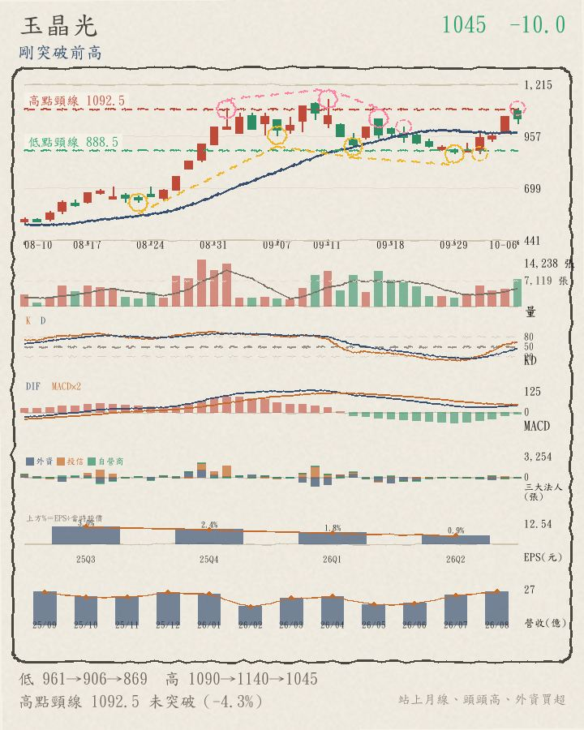
今天帶量收黑、站上月線 975.6，離高點頸線 1092.5 還差 4.3%，高點還在墊高（但底部沒同步墊高）。
- 月線位置：收盤 1045 在月線 975.6 之上；5 日線 980.2 也在月線之上（短均在上）；月線走平或向下、5 日線向上
- 量能：成交量是 20 日均量的 1.47 倍，比 20 日均量大不少；收黑卻量增，量價背離
- 關鍵價位：高點頸線 1092.5 還沒突破，差 4.3%；最近轉折高點 1045（高於 0.0%）；最近轉折低點 869（高於 20.3%）
- 轉折結構：高點 1090、1140、1045 墊高 4.8%（頭頭高），但低點 961、906、869 沒有同步墊高；還沒確認的轉折低點 10-01 871；還沒確認的轉折高點 09-21 1005、10-06 1095（圖上虛線小圈）
剛突破前高 成交金額 83.93 億・全榜第 38 名（上市第 31 名）
好條件 6/8：站上月線、月線向上、頭頭高、相對大盤強、外資買超、量價攻擊（收紅＋大量）
不好條件 0/8：無
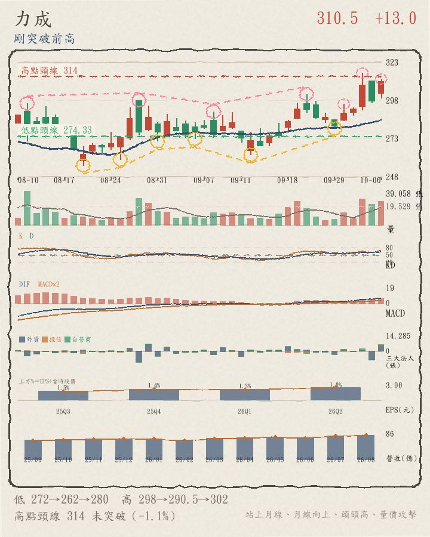
今天帶量收紅、站上月線 285.125，離高點頸線 314 還差 1.1%，高點還在墊高（但底部沒同步墊高）。
- 月線位置：收盤 310.5 在月線 285.125 之上；5 日線 299.6 也在月線之上（短均在上）；月線向上、5 日線向上
- 量能：成交量是 20 日均量的 2.06 倍，比 20 日均量大不少；收紅又量增，量價配合
- 關鍵價位：高點頸線 314 還沒突破，差 1.1%；最近轉折高點 302（高於 2.8%）；最近轉折低點 279.5（高於 11.1%）
- 轉折結構：高點 298、290.5、302 墊高 4.6%（頭頭高），但低點 272.5、262、279.5 沒有同步墊高；還沒確認的轉折高點 10-02 316、10-06 312（圖上虛線小圈）
剛突破前高 成交金額 76.32 億・全榜第 40 名（上市第 32 名）
好條件 4/8：站上月線、頭頭高、突破頸線、外資買超
不好條件 3/8：今日下跌、相對大盤弱、月線下彎
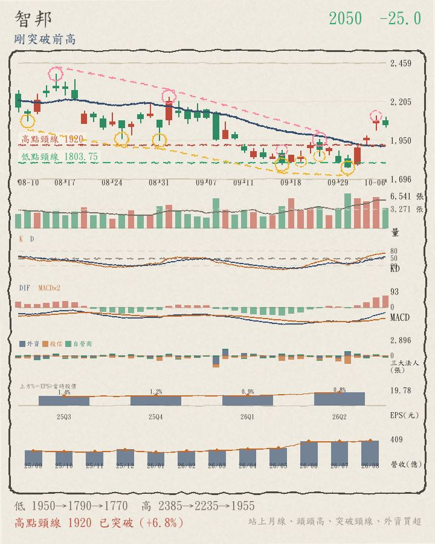
今天收黑、站上月線 1912.25，已站上高點頸線 1920，高點還在墊高（但底部沒同步墊高）。
- 月線位置：收盤 2050 在月線 1912.25 之上；5 日線 1953 也在月線之上（短均在上）；月線走平或向下、5 日線向上
- 量能：成交量是 20 日均量的 0.97 倍，跟 20 日均量差不多
- 關鍵價位：高點頸線 1920 已站上；最近轉折高點 1955（高於 4.9%）；最近轉折低點 1770（高於 15.8%）
- 轉折結構：高點 2385、2235、1955 墊高 7.9%（頭頭高），但低點 1950、1790、1770 沒有同步墊高；還沒確認的轉折低點 09-21 1810、09-23 1845；還沒確認的轉折高點 09-17 1885、10-05 2110（圖上虛線小圈）
上升趨勢（底底高＋頭頭高） 成交金額 72 億・全榜第 42 名（上市第 33 名）
好條件 7/8：站上月線、月線向上、底底高、頭頭高、突破頸線、相對大盤強、外資買超
不好條件 0/8：無
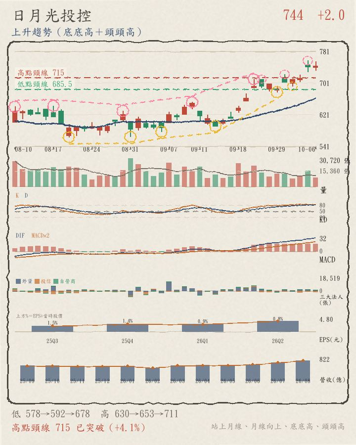
今天收紅、但成交量比平均少、站上月線 662.75，已站上高點頸線 715，轉折結構仍是底底高＋頭頭高。
- 月線位置：收盤 744 在月線 662.75 之上；5 日線 722.4 也在月線之上（短均在上）；月線向上、5 日線向上
- 量能：成交量是 20 日均量的 0.63 倍，比 20 日均量少很多；收紅但量縮，量價背離
- 關鍵價位：高點頸線 715 已站上；最近轉折高點 711（高於 4.6%）；最近轉折低點 678（高於 9.7%）
- 轉折結構：低點 578、592、678 一路墊高 17.3%、高點 630、653、711 也一路墊高 12.9%，是底底高＋頭頭高；還沒確認的轉折低點 10-01 693；還沒確認的轉折高點 09-30 723、10-05 758（圖上虛線小圈）
高點墊高、底部不穩 成交金額 70.11 億・全榜第 43 名（上市第 34 名）
好條件 5/8：站上月線、月線向上、頭頭高、突破頸線、相對大盤強
不好條件 1/8：外資賣超
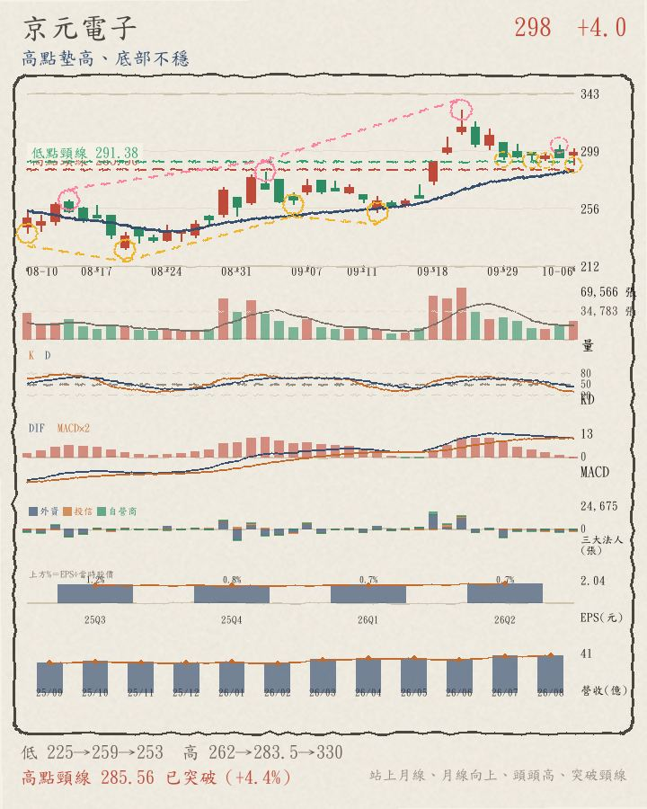
今天收紅、站上月線 284.425，已站上高點頸線 285.56，高點還在墊高（但底部沒同步墊高）。
- 月線位置：收盤 298 在月線 284.425 之上；5 日線 295.6 也在月線之上（短均在上）；月線向上、5 日線走平或向下
- 量能：成交量是 20 日均量的 0.98 倍，跟 20 日均量差不多
- 關鍵價位：高點頸線 285.56 已站上；最近轉折高點 330（低於 9.7%）；最近轉折低點 253（高於 17.8%）
- 轉折結構：高點 262、283.5、330 墊高 26.0%（頭頭高），但低點 225、259、253 沒有同步墊高；還沒確認的轉折低點 10-02 292、10-06 288.5；還沒確認的轉折高點 10-05 303.5（圖上虛線小圈）
剛突破前高 成交金額 64.9 億・全榜第 45 名（上市第 35 名）
好條件 3/8：站上月線、月線向上、頭頭高
不好條件 4/8：今日下跌、相對大盤弱、外資賣超、收盤跌破前一日低點
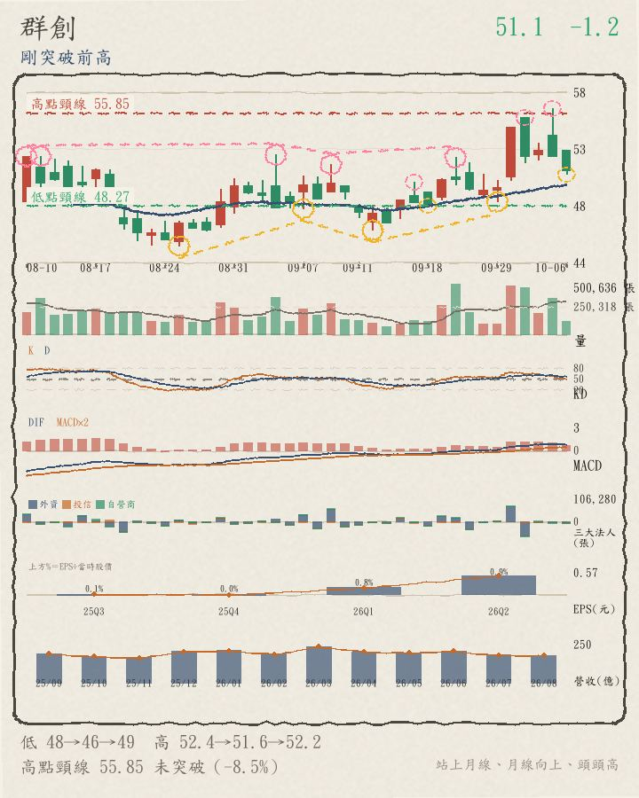
今天收黑、成交量也比平均少、站上月線 49.94，離高點頸線 55.85 還差 8.5%，高點還在墊高（但底部沒同步墊高）。
- 月線位置：收盤 51.1 在月線 49.94 之上；5 日線 52.64 也在月線之上（短均在上）；月線向上、5 日線向上
- 量能：成交量是 20 日均量的 0.57 倍，比 20 日均量少很多
- 關鍵價位：高點頸線 55.85 還沒突破，差 8.5%；最近轉折高點 52.2（低於 2.1%）；最近轉折低點 48.55（高於 5.3%）
- 轉折結構：高點 52.4、51.6、52.2 墊高 7.7%（頭頭高），但低點 48、46.25、48.55 沒有同步墊高；還沒確認的轉折低點 09-18 48.25、10-06 50.8；還沒確認的轉折高點 10-01 55.5、10-05 56.2（圖上虛線小圈）
區間或轉弱 成交金額 64.39 億・全榜第 46 名（上市第 36 名）
好條件 1/8：站上月線
不好條件 4/8：今日下跌、相對大盤弱、外資賣超、月線下彎
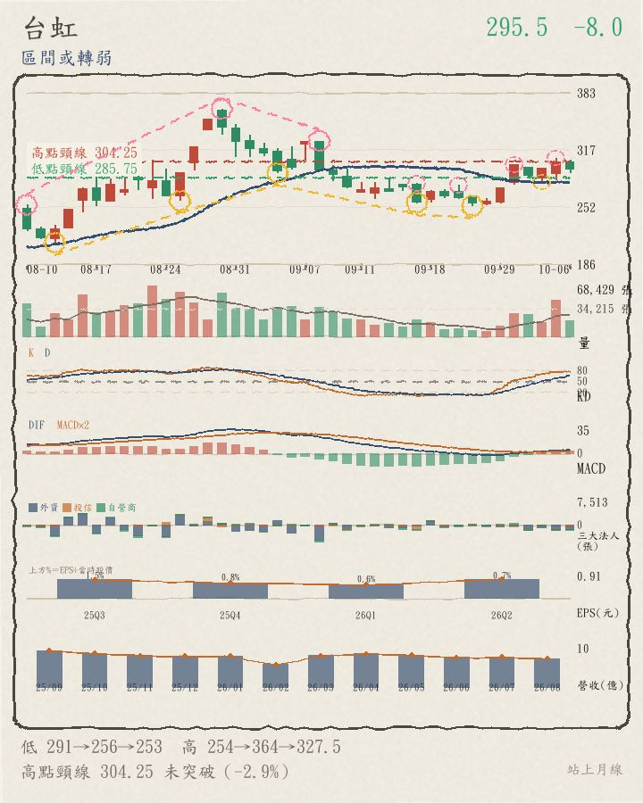
今天收黑、站上月線 280.175，離高點頸線 304.25 還差 2.9%，轉折還沒走出明顯方向。
- 月線位置：收盤 295.5 在月線 280.175 之上；5 日線 296.8 也在月線之上（短均在上）；月線走平或向下、5 日線向上
- 量能：成交量是 20 日均量的 0.98 倍，跟 20 日均量差不多
- 關鍵價位：高點頸線 304.25 還沒突破，差 2.9%；最近轉折高點 327.5（低於 9.8%）；最近轉折低點 253（高於 16.8%）
- 轉折結構：低點 291、256.5、253 與高點 254、364、327.5 都沒有明顯遞增，屬於區間震盪或轉弱；還沒確認的轉折低點 10-02 280.5；還沒確認的轉折高點 09-30 300.5、10-05 308（圖上虛線小圈）
區間或轉弱 成交金額 61.09 億・全榜第 49 名（上市第 37 名）
好條件 3/8：相對大盤強、外資買超、量價攻擊（收紅＋大量）
不好條件 2/8：在月線之下、月線下彎
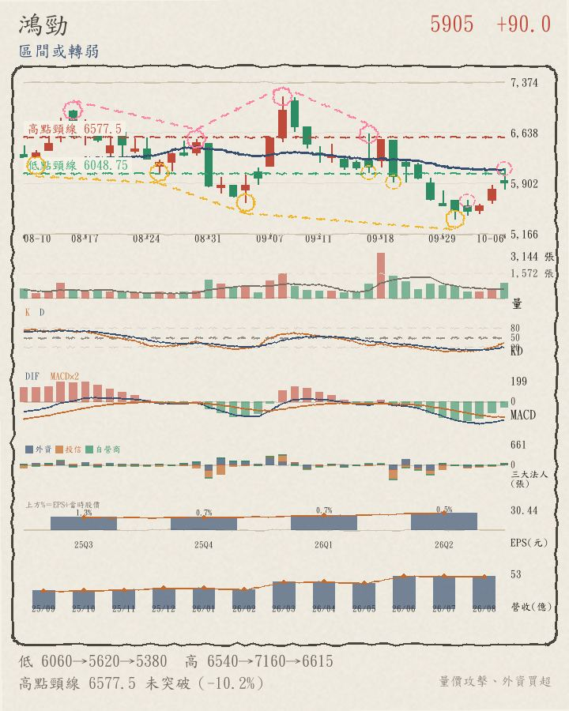
今天帶量收紅、跌破月線 6098，離高點頸線 6577.5 還差 10.2%，轉折還沒走出明顯方向。
- 月線位置：收盤 5905 在月線 6098 之下；5 日線 5659 也在月線之下（短均在下）；月線走平或向下、5 日線走平或向下
- 量能：成交量是 20 日均量的 1.15 倍，比 20 日均量大不少；收紅又量增，量價配合
- 關鍵價位：高點頸線 6577.5 還沒突破，差 10.2%；最近轉折高點 6615（低於 10.7%）；最近轉折低點 5380（高於 9.8%）
- 轉折結構：低點 6060、5620、5380 與高點 6540、7160、6615 都沒有明顯遞增，屬於區間震盪或轉弱；還沒確認的轉折低點 09-17 6055、09-21 5920；還沒確認的轉折高點 10-01 5650、10-06 6115（圖上虛線小圈）
剛突破前高 成交金額 57.22 億・全榜第 50 名（上市第 38 名）
好條件 3/8：站上月線、月線向上、頭頭高
不好條件 2/8：相對大盤弱、外資賣超
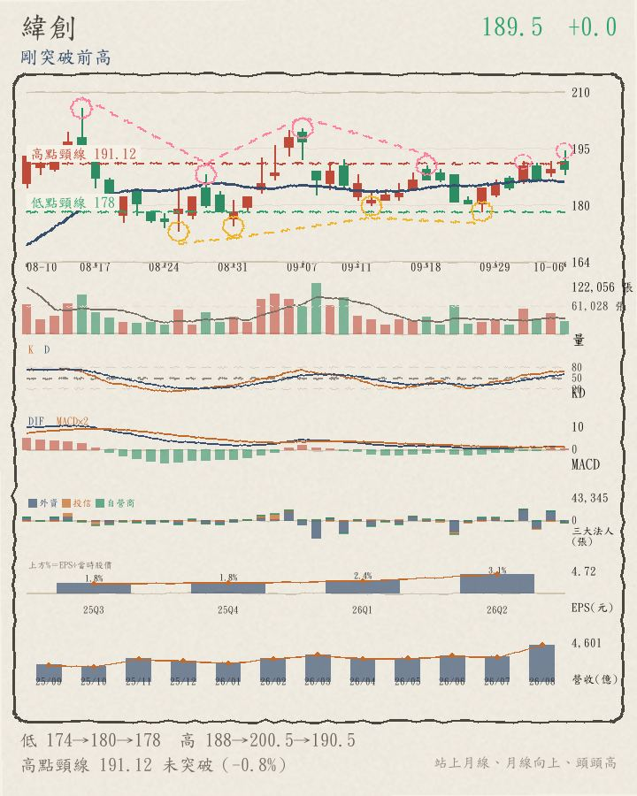
今天收黑、成交量也比平均少、站上月線 186，離高點頸線 191.12 還差 0.8%，高點還在墊高（但底部沒同步墊高）。
- 月線位置：收盤 189.5 在月線 186 之上；5 日線 188.1 也在月線之上（短均在上）；月線向上、5 日線向上
- 量能：成交量是 20 日均量的 0.60 倍，比 20 日均量少很多
- 關鍵價位：高點頸線 191.12 還沒突破，差 0.8%；最近轉折高點 190.5（低於 0.5%）；最近轉折低點 178（高於 6.5%）
- 轉折結構：高點 188、200.5、190.5 墊高 2.1%（頭頭高），但低點 174、179.5、178 沒有同步墊高；還沒確認的轉折高點 10-01 191.5、10-06 194.5（圖上虛線小圈）
剛突破前高 成交金額 53.28 億・全榜第 51 名（上市第 39 名）
好條件 4/8：站上月線、月線向上、頭頭高、突破頸線
不好條件 5/8：今日下跌、相對大盤弱、量增下跌（出貨）、外資賣超、收盤跌破前一日低點
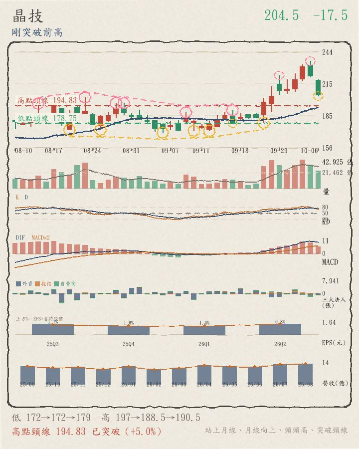
今天帶量收黑、站上月線 192.95，已站上高點頸線 194.83，高點還在墊高（但底部沒同步墊高）。
- 月線位置：收盤 204.5 在月線 192.95 之上；5 日線 217.1 也在月線之上（短均在上）；月線向上、5 日線向上
- 量能：成交量是 20 日均量的 1.38 倍，比 20 日均量大不少；收黑卻量增，量價背離
- 關鍵價位：高點頸線 194.83 已站上；最近轉折高點 190.5（高於 7.3%）；最近轉折低點 179（高於 14.2%）
- 轉折結構：高點 197、188.5、190.5 墊高 23.6%（頭頭高），但低點 171.5、171.5、179 沒有同步墊高；還沒確認的轉折低點 09-17 178.5、10-06 203.5；還沒確認的轉折高點 09-29 222.5、10-05 235.5（圖上虛線小圈）
剛突破前高 成交金額 51.49 億・全榜第 52 名（上市第 40 名）
好條件 4/8：站上月線、頭頭高、相對大盤強、量價攻擊（收紅＋大量）
不好條件 2/8：外資賣超、月線下彎
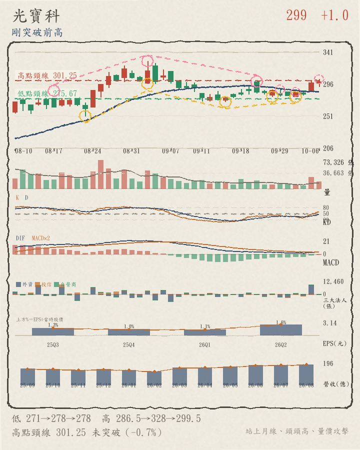
今天帶量收紅、站上月線 285.3，離高點頸線 301.25 還差 0.7%，高點還在墊高（但底部沒同步墊高）。
- 月線位置：收盤 299 在月線 285.3 之上；5 日線 288.5 也在月線之上（短均在上）；月線走平或向下、5 日線向上
- 量能：成交量是 20 日均量的 1.06 倍，比 20 日均量大一些；收紅又量增，量價配合
- 關鍵價位：高點頸線 301.25 還沒突破，差 0.7%；最近轉折高點 299.5（低於 0.2%）；最近轉折低點 278（高於 7.6%）
- 轉折結構：高點 286.5、328、299.5 墊高 1.2%（頭頭高），但低點 271、278、278 沒有同步墊高；還沒確認的轉折高點 10-01 285、10-06 303（圖上虛線小圈）
剛突破前高 成交金額 51.05 億・全榜第 53 名（上市第 41 名）
好條件 6/8：站上月線、月線向上、頭頭高、突破頸線、相對大盤強、量價攻擊（收紅＋大量）
不好條件 1/8：外資賣超
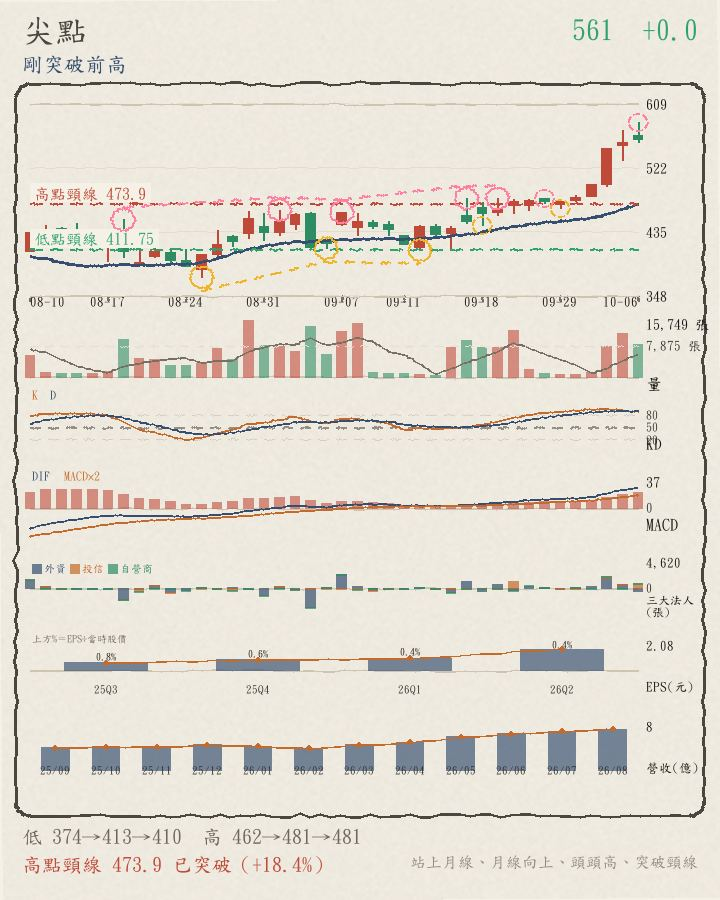
今天帶量收紅、站上月線 473.107，已站上高點頸線 473.9，高點還在墊高（但底部沒同步墊高）。
- 月線位置：收盤 561 在月線 473.107 之上；5 日線 529.855 也在月線之上（短均在上）；月線向上、5 日線向上
- 量能：成交量是 20 日均量的 1.60 倍，比 20 日均量大不少；收紅又量增，量價配合
- 關鍵價位：高點頸線 473.9 已站上；最近轉折高點 481（高於 16.6%）；最近轉折低點 410.5（高於 36.7%）
- 轉折結構：高點 462、481、481 墊高 21.4%（頭頭高），但低點 373.5、413、410.5 沒有同步墊高；還沒確認的轉折低點 09-18 444、09-29 466.931；還沒確認的轉折高點 09-24 480.5、10-06 584（圖上虛線小圈）
剛突破前高 成交金額 50.9 億・全榜第 54 名（上市第 42 名）
好條件 3/8：站上月線、月線向上、頭頭高
不好條件 4/8：今日下跌、相對大盤弱、外資賣超、收盤跌破前一日低點
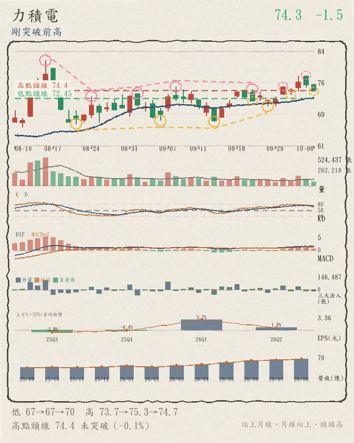
今天收黑、成交量也比平均少、站上月線 72.645，離高點頸線 74.4 還差 0.1%，高點還在墊高（但底部沒同步墊高）。
- 月線位置：收盤 74.3 在月線 72.645 之上；5 日線 75.28 也在月線之上（短均在上）；月線向上、5 日線向上
- 量能：成交量是 20 日均量的 0.53 倍，比 20 日均量少很多
- 關鍵價位：高點頸線 74.4 還沒突破，差 0.1%；最近轉折高點 74.7（低於 0.5%）；最近轉折低點 70.5（高於 5.4%）
- 轉折結構：高點 73.7、75.3、74.7 墊高 4.6%（頭頭高），但低點 67、66.7、70.5 沒有同步墊高；還沒確認的轉折低點 10-01 73.3、10-06 74.2；還沒確認的轉折高點 09-30 75.4、10-05 78.1（圖上虛線小圈）
剛突破前高 成交金額 50.46 億・全榜第 55 名（上市第 43 名）
好條件 3/8：站上月線、月線向上、頭頭高
不好條件 4/8：今日下跌、相對大盤弱、外資賣超、收盤跌破前一日低點
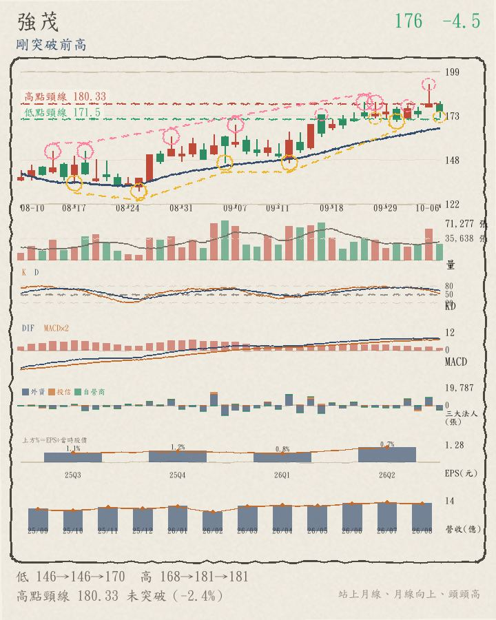
今天收黑、成交量也比平均少、站上月線 166.1，離高點頸線 180.33 還差 2.4%，高點還在墊高（但底部沒同步墊高）。
- 月線位置：收盤 176 在月線 166.1 之上；5 日線 176.1 也在月線之上（短均在上）；月線向上、5 日線向上
- 量能：成交量是 20 日均量的 0.70 倍，比 20 日均量少很多
- 關鍵價位：高點頸線 180.33 還沒突破，差 2.4%；最近轉折高點 181（低於 2.8%）；最近轉折低點 170（高於 3.5%）
- 轉折結構：高點 168、181、181 墊高 5.8%（頭頭高），但低點 146、146、170 沒有同步墊高；還沒確認的轉折低點 09-24 172、10-06 172.5；還沒確認的轉折高點 10-01 179、10-05 191.5（圖上虛線小圈）
區間或轉弱 成交金額 49.66 億・全榜第 56 名（上市第 44 名）
好條件 3/8：站上月線、月線向上、外資買超
不好條件 3/8：今日下跌、相對大盤弱、量增下跌（出貨）
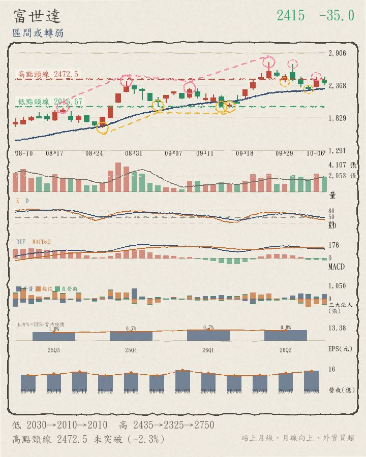
今天帶量收黑、站上月線 2312.75，離高點頸線 2472.5 還差 2.3%，轉折還沒走出明顯方向。
- 月線位置：收盤 2415 在月線 2312.75 之上；5 日線 2404 也在月線之上（短均在上）；月線向上、5 日線走平或向下
- 量能：成交量是 20 日均量的 1.45 倍，比 20 日均量大不少；收黑卻量增，量價背離
- 關鍵價位：高點頸線 2472.5 還沒突破，差 2.3%；最近轉折高點 2750（低於 12.2%）；最近轉折低點 2010（高於 20.1%）
- 轉折結構：低點 2030、2010、2010 與高點 2435、2325、2750 都沒有明顯遞增，屬於區間震盪或轉弱；還沒確認的轉折低點 09-29 2420、10-02 2300；還沒確認的轉折高點 09-30 2720、10-05 2510（圖上虛線小圈）
剛突破前高 成交金額 49.54 億・全榜第 57 名（上市第 45 名）
好條件 3/8：站上月線、月線向上、頭頭高
不好條件 4/8：今日下跌、相對大盤弱、量增下跌（出貨）、外資賣超
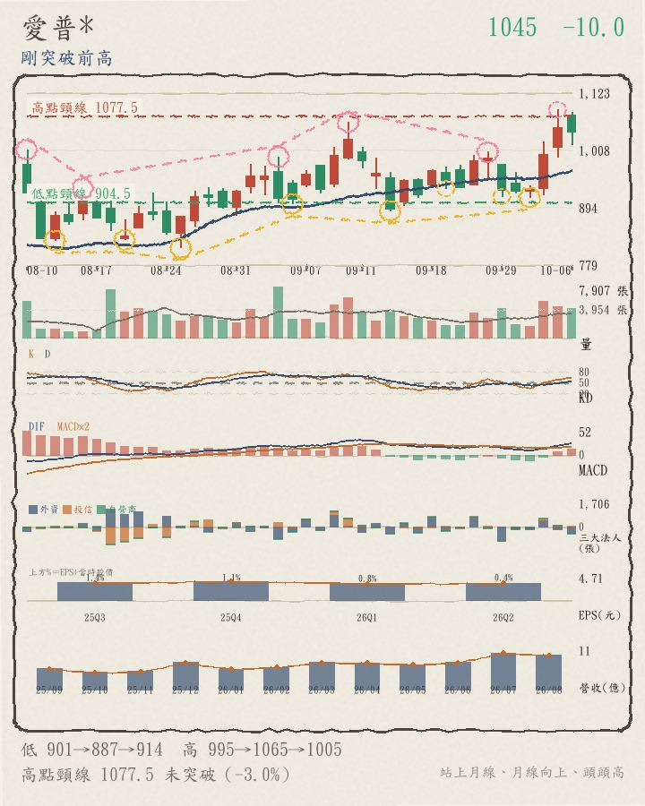
今天帶量收黑、站上月線 967.4，離高點頸線 1077.5 還差 3.0%，高點還在墊高（但底部沒同步墊高）。
- 月線位置：收盤 1045 在月線 967.4 之上；5 日線 992 也在月線之上（短均在上）；月線向上、5 日線向上
- 量能：成交量是 20 日均量的 1.34 倍，比 20 日均量大不少；收黑卻量增，量價背離
- 關鍵價位：高點頸線 1077.5 還沒突破，差 3.0%；最近轉折高點 1005（高於 4.0%）；最近轉折低點 914（高於 14.3%）
- 轉折結構：高點 995、1065、1005 墊高 8.5%（頭頭高），但低點 901、887、914 沒有同步墊高；還沒確認的轉折低點 09-21 932、09-29 916；還沒確認的轉折高點 10-05 1090（圖上虛線小圈）
剛突破前高 成交金額 49.53 億・全榜第 58 名（上市第 46 名）
好條件 5/8：站上月線、頭頭高、相對大盤強、外資買超、量價攻擊（收紅＋大量）
不好條件 1/8：月線下彎
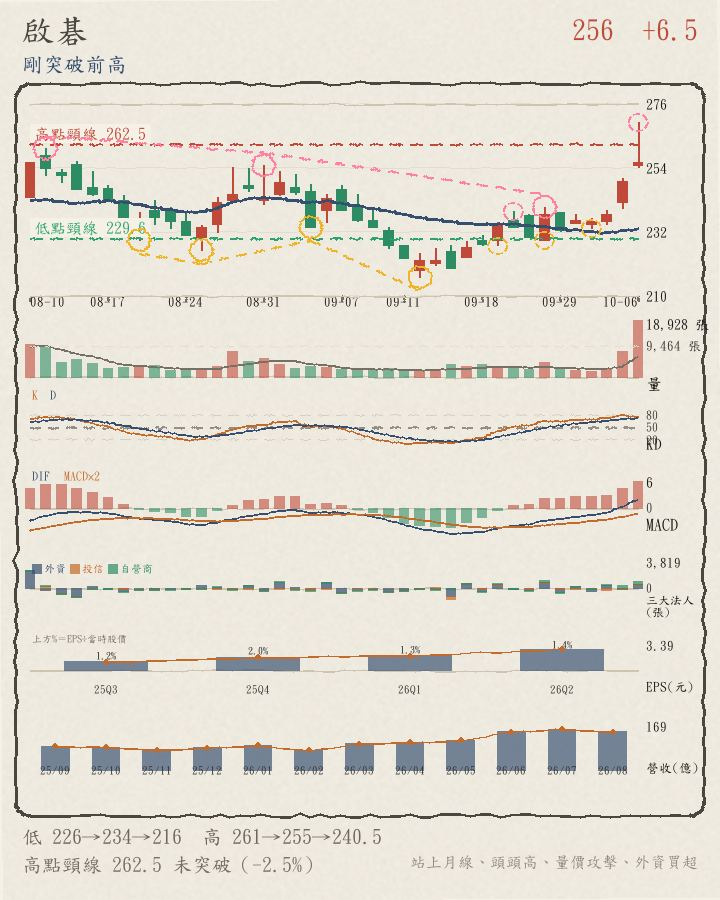
今天帶量收紅、站上月線 232.925，離高點頸線 262.5 還差 2.5%，高點還在墊高（但底部沒同步墊高）。
- 月線位置：收盤 256 在月線 232.925 之上；5 日線 243 也在月線之上（短均在上）；月線走平或向下、5 日線向上
- 量能：成交量是 20 日均量的 5.92 倍，比 20 日均量大不少；收紅又量增，量價配合
- 關鍵價位：高點頸線 262.5 還沒突破，差 2.5%；最近轉折高點 240.5（高於 6.4%）；最近轉折低點 216（高於 18.5%）
- 轉折結構：高點 261、255、240.5 墊高 12.3%（頭頭高），但低點 225.5、233.5、216 沒有同步墊高；還沒確認的轉折低點 09-24 229、10-01 233；還沒確認的轉折高點 09-22 239、10-06 270（圖上虛線小圈）
上升趨勢（底底高＋頭頭高） 成交金額 46.75 億・全榜第 61 名（上市第 47 名）
好條件 4/8：站上月線、月線向上、底底高、頭頭高
不好條件 4/8：今日下跌、相對大盤弱、外資賣超、收盤跌破前一日低點
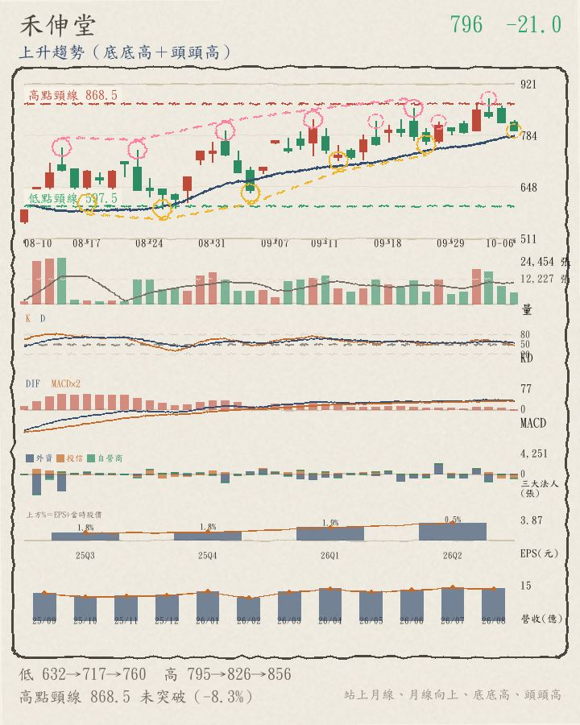
今天收黑、成交量也比平均少、站上月線 782.25，離高點頸線 868.5 還差 8.3%，轉折結構仍是底底高＋頭頭高。
- 月線位置：收盤 796 在月線 782.25 之上；5 日線 818.2 也在月線之上（短均在上）；月線向上、5 日線向上
- 量能：成交量是 20 日均量的 0.57 倍，比 20 日均量少很多
- 關鍵價位：高點頸線 868.5 還沒突破，差 8.3%；最近轉折高點 856（低於 7.0%）；最近轉折低點 760（高於 4.7%）
- 轉折結構：低點 632、717、760 一路墊高 20.3%、高點 795、826、856 也一路墊高 7.7%，是底底高＋頭頭高；還沒確認的轉折低點 10-06 796；還沒確認的轉折高點 09-24 820、10-02 881（圖上虛線小圈）
底部墊高、突破前高 成交金額 46.7 億・全榜第 62 名（上市第 48 名）
好條件 4/8：站上月線、月線向上、底底高、頭頭高
不好條件 5/8：今日下跌、相對大盤弱、量增下跌（出貨）、外資賣超、收盤跌破前一日低點
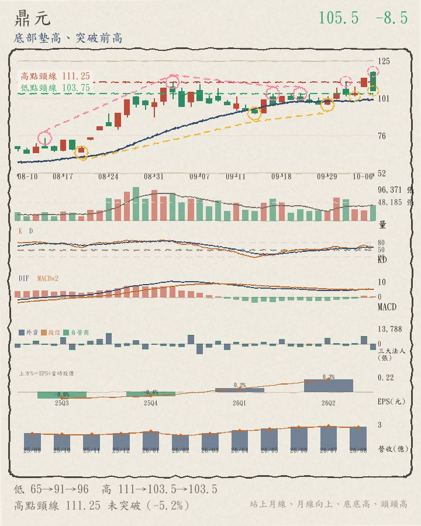
今天收黑、站上月線 99.74，離高點頸線 111.25 還差 5.2%，轉折結構仍是底底高＋頭頭高。
- 月線位置：收盤 105.5 在月線 99.74 之上；5 日線 106.1 也在月線之上（短均在上）；月線向上、5 日線向上
- 量能：成交量是 20 日均量的 1.03 倍，跟 20 日均量差不多
- 關鍵價位：高點頸線 111.25 還沒突破，差 5.2%；最近轉折高點 103.5（高於 1.9%）；最近轉折低點 96.3（高於 9.6%）
- 轉折結構：低點 65.2、90.6、96.3 一路墊高 47.7%、高點 111、103.5、103.5 也一路墊高 14.0%，是底底高＋頭頭高；還沒確認的轉折低點 10-02 102、10-06 105.5；還沒確認的轉折高點 10-01 111.5、10-06 118（圖上虛線小圈）
高點墊高、底部不穩 成交金額 45.5 億・全榜第 66 名（上市第 49 名）
好條件 5/8：站上月線、月線向上、頭頭高、相對大盤強、外資買超
不好條件 0/8：無
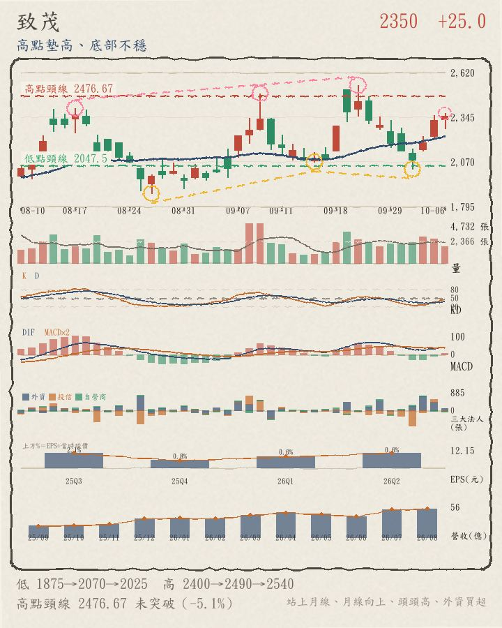
今天收紅、但成交量比平均少、站上月線 2227.75，離高點頸線 2476.67 還差 5.1%，高點還在墊高（但底部沒同步墊高）。
- 月線位置：收盤 2350 在月線 2227.75 之上；5 日線 2216 也在月線之下（短均在下）；月線向上、5 日線走平或向下
- 量能：成交量是 20 日均量的 0.81 倍，比 20 日均量少很多；收紅但量縮，量價背離
- 關鍵價位：高點頸線 2476.67 還沒突破，差 5.1%；最近轉折高點 2540（低於 7.5%）；最近轉折低點 2025（高於 16.0%）
- 轉折結構：高點 2400、2490、2540 墊高 5.8%（頭頭高），但低點 1875、2070、2025 沒有同步墊高；還沒確認的轉折高點 10-06 2370（圖上虛線小圈）
上升趨勢（底底高＋頭頭高） 成交金額 44.58 億・全榜第 67 名（上市第 50 名）
好條件 8/8：站上月線、月線向上、底底高、頭頭高、突破頸線、相對大盤強、外資買超、量價攻擊（收紅＋大量）
不好條件 0/8：無
今天帶量收紅、站上月線 201.725，已站上高點頸線 214，轉折結構仍是底底高＋頭頭高。
- 月線位置：收盤 234 在月線 201.725 之上；5 日線 221.1 也在月線之上（短均在上）；月線向上、5 日線向上
- 量能：成交量是 20 日均量的 3.45 倍，比 20 日均量大不少；收紅又量增，量價配合
- 關鍵價位：高點頸線 214 已站上；最近轉折高點 223（高於 4.9%）；最近轉折低點 179.5（高於 30.4%）
- 轉折結構：低點 168、172、179.5 一路墊高 6.8%、高點 181.5、210、223 也一路墊高 22.9%，是底底高＋頭頭高；還沒確認的轉折低點 09-24 204.5、10-05 211.5；還沒確認的轉折高點 09-23 218、10-06 237.5（圖上虛線小圈）
剛突破前高 成交金額 290.24 億・全榜第 7 名（上櫃第 1 名）
好條件 4/8：站上月線、月線向上、頭頭高、突破頸線
不好條件 4/8：今日下跌、相對大盤弱、量增下跌（出貨）、外資賣超
今天帶量收黑、站上月線 1461.5，已站上高點頸線 1490，高點還在墊高（但底部沒同步墊高）。
- 月線位置：收盤 1755 在月線 1461.5 之上；5 日線 1642 也在月線之上（短均在上）；月線向上、5 日線向上
- 量能：成交量是 20 日均量的 2.14 倍，比 20 日均量大不少；收黑卻量增，量價背離
- 關鍵價位：高點頸線 1490 已站上；最近轉折高點 1460（高於 20.2%）；最近轉折低點 1275（高於 37.6%）
- 轉折結構：高點 1565、1430、1460 墊高 21.9%（頭頭高），但低點 1395、1295、1275 沒有同步墊高；還沒確認的轉折低點 09-29 1465、10-06 1680；還沒確認的轉折高點 09-30 1550、10-05 1780（圖上虛線小圈）
剛突破前高 成交金額 162.41 億・全榜第 20 名（上櫃第 2 名）
好條件 6/8：站上月線、月線向上、頭頭高、突破頸線、相對大盤強、量價攻擊（收紅＋大量）
不好條件 1/8：外資賣超
今天帶量收紅、站上月線 987.35，已站上高點頸線 1018.75，高點還在墊高（但底部沒同步墊高）。
- 月線位置：收盤 1205 在月線 987.35 之上；5 日線 1139 也在月線之上（短均在上）；月線向上、5 日線向上
- 量能：成交量是 20 日均量的 1.21 倍，比 20 日均量大不少；收紅又量增，量價配合
- 關鍵價位：高點頸線 1018.75 已站上；最近轉折高點 1010（高於 19.3%）；最近轉折低點 872（高於 38.2%）
- 轉折結構：高點 1015、1015、1010 墊高 24.8%（頭頭高），但低點 931、875、872 沒有同步墊高；還沒確認的轉折低點 09-29 930、10-06 1145；還沒確認的轉折高點 09-17 977、10-06 1260（圖上虛線小圈）
底部墊高、突破前高 成交金額 143.22 億・全榜第 22 名（上櫃第 3 名）
好條件 4/8：站上月線、月線向上、底底高、頭頭高
不好條件 4/8：今日下跌、相對大盤弱、量增下跌（出貨）、外資賣超
今天帶量收黑、站上月線 509.2，離高點頸線 571 還差 3.5%，轉折結構仍是底底高＋頭頭高。
- 月線位置：收盤 551 在月線 509.2 之上；5 日線 528 也在月線之上（短均在上）；月線向上、5 日線向上
- 量能：成交量是 20 日均量的 2.09 倍，比 20 日均量大不少；收黑卻量增，量價背離
- 關鍵價位：高點頸線 571 還沒突破，差 3.5%；最近轉折高點 535（高於 3.0%）；最近轉折低點 477（高於 15.5%）
- 轉折結構：低點 399、469.5、477 一路墊高 19.5%、高點 462、564、535 也一路墊高 8.0%，是底底高＋頭頭高；還沒確認的轉折低點 09-23 490、09-30 495；還沒確認的轉折高點 09-29 519、10-06 578（圖上虛線小圈）
剛突破前高 成交金額 114.8 億・全榜第 27 名（上櫃第 4 名）
好條件 4/8：站上月線、月線向上、頭頭高、突破頸線
不好條件 4/8：今日下跌、相對大盤弱、外資賣超、收盤跌破前一日低點
今天收黑、成交量也比平均少、站上月線 497.9，已站上高點頸線 512.5，高點還在墊高（但底部沒同步墊高）。
- 月線位置：收盤 592 在月線 497.9 之上；5 日線 575.6 也在月線之上（短均在上）；月線向上、5 日線向上
- 量能：成交量是 20 日均量的 0.71 倍，比 20 日均量少很多
- 關鍵價位：高點頸線 512.5 已站上；最近轉折高點 478（高於 23.8%）；最近轉折低點 482（高於 22.8%）
- 轉折結構：高點 492、492、478 墊高 31.8%（頭頭高），但低點 438.5、420、482 沒有同步墊高；還沒確認的轉折低點 09-18 467、10-06 588；還沒確認的轉折高點 09-23 518、10-05 630（圖上虛線小圈）
底部墊高、突破前高 成交金額 109.56 億・全榜第 28 名（上櫃第 5 名）
好條件 4/8：站上月線、月線向上、底底高、頭頭高
不好條件 4/8：今日下跌、相對大盤弱、量增下跌（出貨）、外資賣超
今天帶量收黑、站上月線 459，離高點頸線 491.5 還差 0.8%，轉折結構仍是底底高＋頭頭高。
- 月線位置：收盤 487.5 在月線 459 之上；5 日線 472.8 也在月線之上（短均在上）；月線向上、5 日線向上
- 量能：成交量是 20 日均量的 2.71 倍，比 20 日均量大不少；收黑卻量增，量價背離
- 關鍵價位：高點頸線 491.5 還沒突破，差 0.8%；最近轉折高點 487（高於 0.1%）；最近轉折低點 436.5（高於 11.7%）
- 轉折結構：低點 289、407、436.5 一路墊高 51.0%、高點 431、496、487 也一路墊高 8.8%，是底底高＋頭頭高；還沒確認的轉折低點 09-18 418.5、10-01 450；還沒確認的轉折高點 09-30 462、10-06 530（圖上虛線小圈）
底部墊高、突破前高 成交金額 95.76 億・全榜第 34 名（上櫃第 6 名）
好條件 4/8：站上月線、月線向上、底底高、頭頭高
不好條件 4/8：今日下跌、相對大盤弱、量增下跌（出貨）、外資賣超
今天帶量收黑、站上月線 120.994，離高點頸線 134.25 還差 5.4%，轉折結構仍是底底高＋頭頭高。
- 月線位置：收盤 127 在月線 120.994 之上；5 日線 121.7 也在月線之上（短均在上）；月線向上、5 日線向上
- 量能：成交量是 20 日均量的 1.40 倍，比 20 日均量大不少；收黑卻量增，量價背離
- 關鍵價位：高點頸線 134.25 還沒突破，差 5.4%；最近轉折高點 129.5（低於 1.9%）；最近轉折低點 113（高於 12.4%）
- 轉折結構：低點 108.571、111、113 一路墊高 4.1%、高點 89.4284、135、129.5 也一路墊高 3.1%，是底底高＋頭頭高；還沒確認的轉折低點 10-01 113.5；還沒確認的轉折高點 10-06 133.5（圖上虛線小圈）
高點墊高、底部不穩 成交金額 86.83 億・全榜第 36 名（上櫃第 7 名）
好條件 3/8：站上月線、月線向上、頭頭高
不好條件 4/8：今日下跌、相對大盤弱、外資賣超、收盤跌破前一日低點
今天收黑、站上月線 117，離高點頸線 140 還差 8.6%，高點還在墊高（但底部沒同步墊高）。
- 月線位置：收盤 128 在月線 117 之上；5 日線 131.5 也在月線之上（短均在上）；月線向上、5 日線向上
- 量能：成交量是 20 日均量的 0.96 倍，跟 20 日均量差不多
- 關鍵價位：高點頸線 140 還沒突破，差 8.6%；最近轉折高點 125（高於 2.4%）；最近轉折低點 100（高於 28.0%）
- 轉折結構：高點 117.5、119、125 墊高 6.4%（頭頭高），但低點 103.5、104、100 沒有同步墊高；還沒確認的轉折低點 09-24 114.5、10-06 126.5；還沒確認的轉折高點 10-02 140、10-05 140（圖上虛線小圈）
剛突破前高 成交金額 83.72 億・全榜第 39 名（上櫃第 8 名）
好條件 7/8：站上月線、月線向上、頭頭高、突破頸線、相對大盤強、外資買超、量價攻擊（收紅＋大量）
不好條件 0/8：無
今天帶量收紅、站上月線 1293，已站上高點頸線 1436.67，高點還在墊高（但底部沒同步墊高）。
- 月線位置：收盤 1535 在月線 1293 之上；5 日線 1393 也在月線之上（短均在上）；月線向上、5 日線向上
- 量能：成交量是 20 日均量的 2.72 倍，比 20 日均量大不少；收紅又量增，量價配合
- 關鍵價位：高點頸線 1436.67 已站上；最近轉折高點 1270（高於 20.9%）；最近轉折低點 1180（高於 30.1%）
- 轉折結構：高點 1455、1435、1270 墊高 25.2%（頭頭高），但低點 1185、1180、1180 沒有同步墊高；還沒確認的轉折低點 09-21 1200、10-01 1260；還沒確認的轉折高點 09-30 1420、10-06 1590（圖上虛線小圈）
上升趨勢（底底高＋頭頭高） 成交金額 72.22 億・全榜第 41 名（上櫃第 9 名）
好條件 8/8：站上月線、月線向上、底底高、頭頭高、突破頸線、相對大盤強、外資買超、量價攻擊（收紅＋大量）
不好條件 0/8：無
今天帶量收紅、站上月線 1495.5，已站上高點頸線 1582，轉折結構仍是底底高＋頭頭高。
- 月線位置：收盤 1715 在月線 1495.5 之上；5 日線 1564 也在月線之上（短均在上）；月線向上、5 日線向上
- 量能：成交量是 20 日均量的 3.36 倍，比 20 日均量大不少；收紅又量增，量價配合
- 關鍵價位：高點頸線 1582 已站上；最近轉折高點 1630（高於 5.2%）；最近轉折低點 1450（高於 18.3%）
- 轉折結構：低點 1220、1310、1450 一路墊高 18.9%、高點 1570、1580、1630 也一路墊高 3.8%，是底底高＋頭頭高；還沒確認的轉折低點 09-22 1480；還沒確認的轉折高點 09-23 1575、10-06 1755（圖上虛線小圈）
剛突破前高 成交金額 67.04 億・全榜第 44 名（上櫃第 10 名）
好條件 2/8：站上月線、頭頭高
不好條件 4/8：今日下跌、相對大盤弱、外資賣超、月線下彎
今天收黑、成交量也比平均少、站上月線 2809，離高點頸線 2936.67 還差 0.6%，高點還在墊高（但底部沒同步墊高）。
- 月線位置：收盤 2920 在月線 2809 之上；5 日線 2840 也在月線之上（短均在上）；月線走平或向下、5 日線向上
- 量能：成交量是 20 日均量的 0.75 倍，比 20 日均量少很多
- 關鍵價位：高點頸線 2936.67 還沒突破，差 0.6%；最近轉折高點 2950（低於 1.0%）；最近轉折低點 2585（高於 13.0%）
- 轉折結構：高點 3600、2930、2950 墊高 5.3%（頭頭高），但低點 1450、2650、2585 沒有同步墊高；還沒確認的轉折低點 10-01 2605；還沒確認的轉折高點 09-29 2735、10-05 3105（圖上虛線小圈）
高點墊高、底部不穩 成交金額 63.41 億・全榜第 47 名（上櫃第 11 名）
好條件 7/8：站上月線、月線向上、頭頭高、突破頸線、相對大盤強、外資買超、量價攻擊（收紅＋大量）
不好條件 0/8：無
今天帶量收紅、站上月線 169.325，已站上高點頸線 185，高點還在墊高（但底部沒同步墊高）。
- 月線位置：收盤 191 在月線 169.325 之上；5 日線 185.5 也在月線之上（短均在上）；月線向上、5 日線向上
- 量能：成交量是 20 日均量的 1.99 倍，比 20 日均量大不少；收紅又量增，量價配合
- 關鍵價位：高點頸線 185 已站上；最近轉折高點 163（高於 17.2%）；最近轉折低點 152.5（高於 25.2%）
- 轉折結構：高點 157、158、163 墊高 3.8%（頭頭高），但低點 146.5、147、152.5 沒有同步墊高；還沒確認的轉折低點 09-24 168、10-01 178.5；還沒確認的轉折高點 10-01 188.5、10-06 195（圖上虛線小圈）
區間或轉弱 成交金額 63.12 億・全榜第 48 名（上櫃第 12 名）
好條件 0/8：無
不好條件 7/8：今日下跌、相對大盤弱、在月線之下、量增下跌（出貨）、外資賣超、月線下彎、收盤跌破前一日低點
今天帶量收黑、跌破月線 574.85，離高點頸線 649.25 還差 12.5%，轉折還沒走出明顯方向。
- 月線位置：收盤 568 在月線 574.85 之下；5 日線 575.4 也在月線之上（短均在上）；月線走平或向下、5 日線走平或向下
- 量能：成交量是 20 日均量的 1.70 倍，比 20 日均量大不少；收黑卻量增，量價背離
- 關鍵價位：高點頸線 649.25 還沒突破，差 12.5%；最近轉折高點 650（低於 12.6%）；最近轉折低點 545（高於 4.2%）
- 轉折結構：低點 572、501、545 與高點 635、658、650 都沒有明顯遞增，屬於區間震盪或轉弱；還沒確認的轉折低點 09-29 556、10-06 561；還沒確認的轉折高點 09-30 576、10-06 622（圖上虛線小圈）
上升趨勢（底底高＋頭頭高） 成交金額 48.62 億・全榜第 59 名（上櫃第 13 名）
好條件 7/8：站上月線、月線向上、底底高、頭頭高、突破頸線、相對大盤強、量價攻擊（收紅＋大量）
不好條件 1/8：外資賣超
今天帶量收紅、站上月線 180.225，已站上高點頸線 142.25，轉折結構仍是底底高＋頭頭高。
- 月線位置：收盤 255 在月線 180.225 之上；5 日線 217 也在月線之上（短均在上）；月線向上、5 日線向上
- 量能：成交量是 20 日均量的 1.33 倍，比 20 日均量大不少；收紅又量增，量價配合
- 關鍵價位：高點頸線 142.25 已站上；最近轉折高點 201（高於 26.9%）；最近轉折低點 172.5（高於 47.8%）
- 轉折結構：低點 77.9、123.5、172.5 一路墊高 121.4%、高點 140.5、144、201 也一路墊高 43.1%，是底底高＋頭頭高；還沒確認的轉折低點 09-24 175；還沒確認的轉折高點 09-21 190、10-06 255（圖上虛線小圈）
剛突破前高 成交金額 47.58 億・全榜第 60 名（上櫃第 14 名）
好條件 6/8：站上月線、月線向上、頭頭高、突破頸線、相對大盤強、量價攻擊（收紅＋大量）
不好條件 1/8：外資賣超
今天帶量收紅、站上月線 98.74，已站上高點頸線 104.5，高點還在墊高（但底部沒同步墊高）。
- 月線位置：收盤 110.5 在月線 98.74 之上；5 日線 103.4 也在月線之上（短均在上）；月線向上、5 日線向上
- 量能：成交量是 20 日均量的 10.11 倍，比 20 日均量大不少；收紅又量增，量價配合
- 關鍵價位：高點頸線 104.5 已站上；最近轉折高點 98.6（高於 12.1%）；最近轉折低點 95（高於 16.3%）
- 轉折結構：高點 105、105、98.6 墊高 14.1%（頭頭高），但低點 100、93.5、95 沒有同步墊高；還沒確認的轉折低點 09-21 95.5、10-06 102；還沒確認的轉折高點 09-30 103.5、10-06 112.5（圖上虛線小圈）
區間或轉弱 成交金額 46.58 億・全榜第 63 名（上櫃第 15 名）
好條件 6/8：站上月線、月線向上、突破頸線、相對大盤強、外資買超、量價攻擊（收紅＋大量）
不好條件 0/8：無
今天帶量收紅、站上月線 5489.5，已站上高點頸線 5645，轉折還沒走出明顯方向。
- 月線位置：收盤 5670 在月線 5489.5 之上；5 日線 5331 也在月線之下（短均在下）；月線向上、5 日線走平或向下
- 量能：成交量是 20 日均量的 1.08 倍，比 20 日均量大一些；收紅又量增，量價配合
- 關鍵價位：高點頸線 5645 已站上；最近轉折高點 5860（低於 3.2%）；最近轉折低點 4995（高於 13.5%）
- 轉折結構：低點 5365、5090、4995 與高點 5585、6060、5860 都沒有明顯遞增，屬於區間震盪或轉弱；還沒確認的轉折低點 09-17 5485；還沒確認的轉折高點 09-24 5625、10-06 5725（圖上虛線小圈）
底部墊高、突破前高 成交金額 46.36 億・全榜第 64 名（上櫃第 16 名）
好條件 5/8：站上月線、月線向上、底底高、頭頭高、外資買超
不好條件 3/8：今日下跌、相對大盤弱、量增下跌（出貨）
今天帶量收黑、站上月線 379.25，離高點頸線 411.5 還差 4.0%，轉折結構仍是底底高＋頭頭高。
- 月線位置：收盤 395 在月線 379.25 之上；5 日線 396.7 也在月線之上（短均在上）；月線向上、5 日線向上
- 量能：成交量是 20 日均量的 3.67 倍，比 20 日均量大不少；收黑卻量增，量價背離
- 關鍵價位：高點頸線 411.5 還沒突破，差 4.0%；最近轉折高點 398（低於 0.8%）；最近轉折低點 349（高於 13.2%）
- 轉折結構：低點 278.5、315.5、349 一路墊高 25.3%、高點 419、414.5、398 也一路墊高 2.1%，是底底高＋頭頭高；還沒確認的轉折低點 09-24 374.5、10-06 361；還沒確認的轉折高點 09-30 406、10-05 406.5（圖上虛線小圈）
底部墊高、未過前高 成交金額 45.67 億・全榜第 65 名（上櫃第 17 名）
好條件 5/8：站上月線、月線向上、底底高、相對大盤強、外資買超
不好條件 0/8：無
今天收紅、但成交量比平均少、站上月線 207.6，離高點頸線 229.33 還差 5.6%，底部還在墊高（但高點沒同步創高）。
- 月線位置：收盤 216.5 在月線 207.6 之上；5 日線 218.1 也在月線之上（短均在上）；月線向上、5 日線向上
- 量能：成交量是 20 日均量的 0.48 倍，比 20 日均量少很多；收紅但量縮，量價背離
- 關鍵價位：高點頸線 229.33 還沒突破，差 5.6%；最近轉折高點 233（低於 7.1%）；最近轉折低點 208（高於 4.1%）
- 轉折結構：低點 152、171、208 墊高 36.8%（底底高），但高點 203、203、233 沒有同步創高；還沒確認的轉折低點 10-06 211；還沒確認的轉折高點 10-01 227、10-05 228（圖上虛線小圈）
上升趨勢（底底高＋頭頭高） 成交金額 44.18 億・全榜第 68 名（上櫃第 18 名）
好條件 7/8：站上月線、月線向上、底底高、頭頭高、相對大盤強、外資買超、量價攻擊（收紅＋大量）
不好條件 0/8：無
今天帶量收紅、站上月線 1490.25，離高點頸線 1695 還差 11.2%，轉折結構仍是底底高＋頭頭高。
- 月線位置：收盤 1505 在月線 1490.25 之上；5 日線 1520 也在月線之上（短均在上）；月線向上、5 日線走平或向下
- 量能：成交量是 20 日均量的 2.15 倍，比 20 日均量大不少；收紅又量增，量價配合
- 關鍵價位：高點頸線 1695 還沒突破，差 11.2%；最近轉折高點 1740（低於 13.5%）；最近轉折低點 1450（高於 3.8%）
- 轉折結構：低點 1050、1235、1450 一路墊高 38.1%、高點 1460、1505、1740 也一路墊高 19.2%，是底底高＋頭頭高；還沒確認的轉折低點 10-05 1435；還沒確認的轉折高點 10-02 1650、10-06 1580（圖上虛線小圈）
剛突破前高 成交金額 37.18 億・全榜第 69 名（上櫃第 19 名）
好條件 5/8：站上月線、月線向上、頭頭高、突破頸線、相對大盤強
不好條件 1/8：外資賣超
今天收紅、但成交量比平均少、站上月線 190.925，已站上高點頸線 188.5，高點還在墊高（但底部沒同步墊高）。
- 月線位置：收盤 215 在月線 190.925 之上；5 日線 214 也在月線之上（短均在上）；月線向上、5 日線向上
- 量能：成交量是 20 日均量的 0.87 倍，比 20 日均量少一些；收紅但量縮，量價背離
- 關鍵價位：高點頸線 188.5 已站上；最近轉折高點 202（高於 6.4%）；最近轉折低點 181.5（高於 18.5%）
- 轉折結構：高點 187.5、187.5、202 墊高 13.6%（頭頭高），但低點 173、170、181.5 沒有同步墊高；還沒確認的轉折低點 09-18 180.5、10-06 211；還沒確認的轉折高點 09-17 191.5、10-02 229.5（圖上虛線小圈）
高點墊高、底部不穩 成交金額 37.17 億・全榜第 70 名（上櫃第 20 名）
好條件 5/8：站上月線、月線向上、頭頭高、突破頸線、外資買超
不好條件 3/8：今日下跌、相對大盤弱、量增下跌（出貨）
今天帶量收黑、站上月線 76.95，已站上高點頸線 82.73，高點還在墊高（但底部沒同步墊高）。
- 月線位置：收盤 92.3 在月線 76.95 之上；5 日線 85.94 也在月線之上（短均在上）；月線向上、5 日線向上
- 量能：成交量是 20 日均量的 2.78 倍，比 20 日均量大不少；收黑卻量增，量價背離
- 關鍵價位：高點頸線 82.73 已站上；最近轉折高點 83.9（高於 10.0%）；最近轉折低點 73.8（高於 25.1%）
- 轉折結構：高點 60、82.8、83.9 墊高 39.8%（頭頭高），但低點 68、67.6、73.8 沒有同步墊高；還沒確認的轉折低點 10-01 78；還沒確認的轉折高點 09-29 81.5、10-06 99.7（圖上虛線小圈）